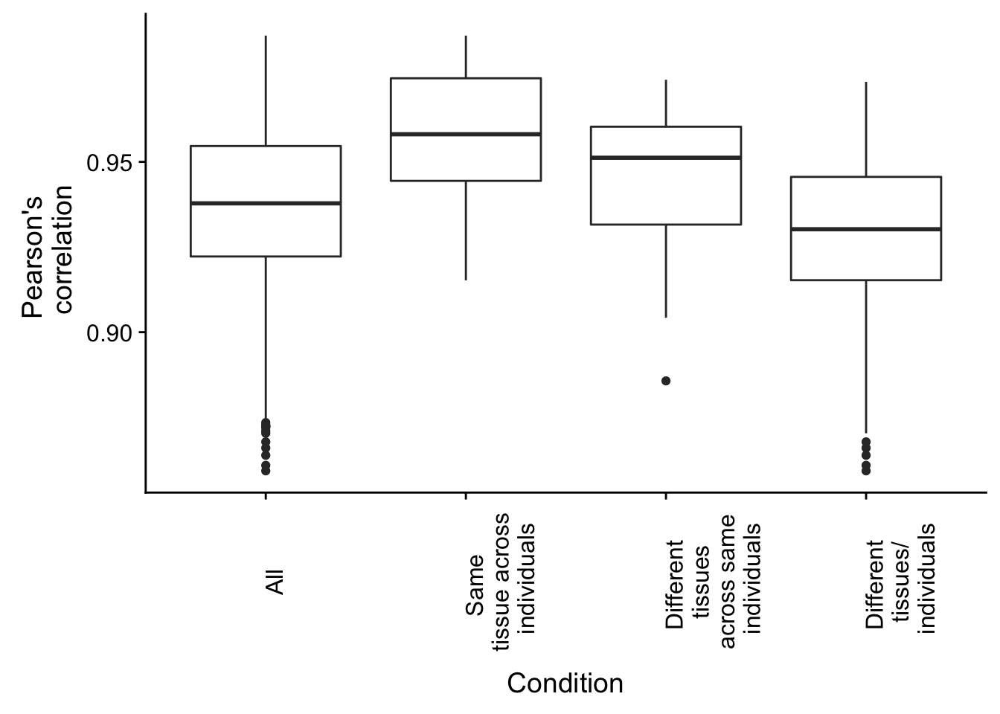
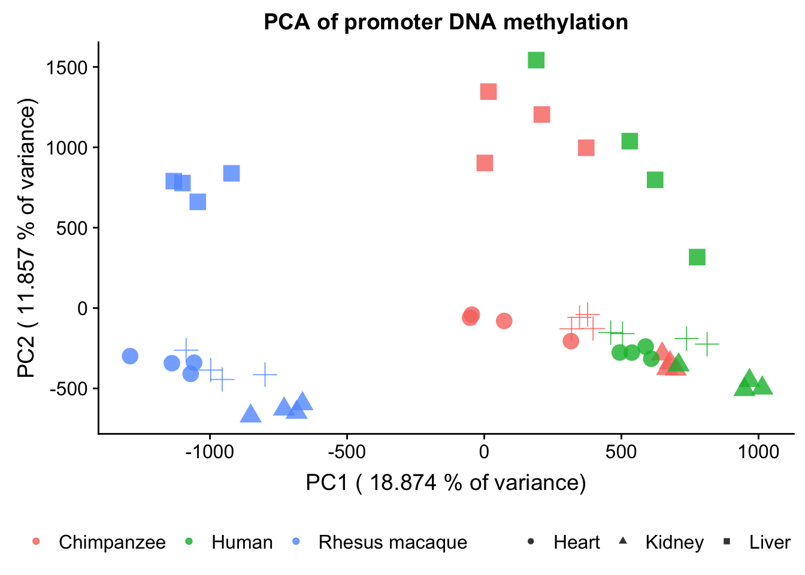
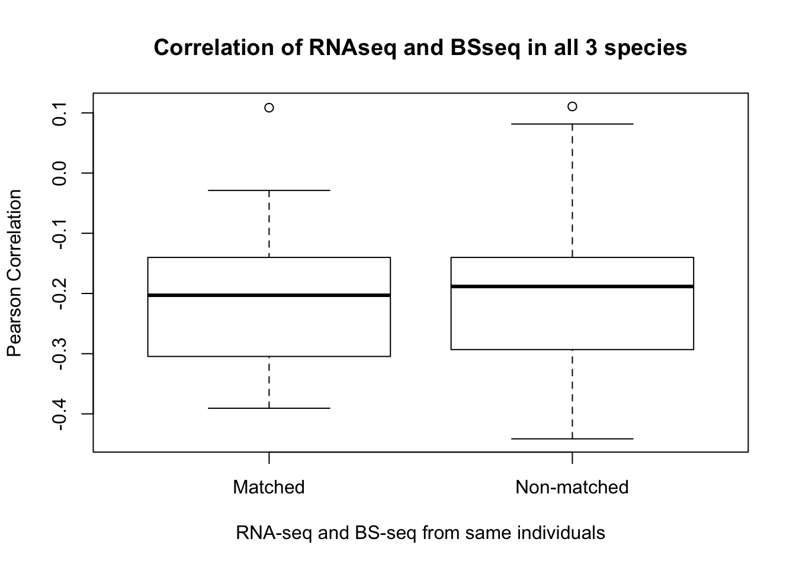

This is an R Markdown document to investigate the correlations of gene expression levels across categories.
# Load libraries
library(plyr)
library(dplyr)## Warning: package 'dplyr' was built under R version 3.4.4##
## Attaching package: 'dplyr'## The following objects are masked from 'package:plyr':
##
## arrange, count, desc, failwith, id, mutate, rename, summarise,
## summarize## The following objects are masked from 'package:stats':
##
## filter, lag## The following objects are masked from 'package:base':
##
## intersect, setdiff, setequal, unionlibrary("tidyr")## Warning: package 'tidyr' was built under R version 3.4.4library("RColorBrewer")
library("ggplot2")## Warning: package 'ggplot2' was built under R version 3.4.4library("cowplot")## Warning: package 'cowplot' was built under R version 3.4.4##
## Attaching package: 'cowplot'## The following object is masked from 'package:ggplot2':
##
## ggsavecolors <- colorRampPalette(c(brewer.pal(9, "Blues")[1],brewer.pal(9, "Blues")[9]))(100)
pal <- c(brewer.pal(9, "Set1"), brewer.pal(8, "Set2"), brewer.pal(12, "Set3"))
# Load data
## Load counts
cpm_12184 <- read.delim("../../../Reg_Evo_Primates/data/PC_cpm_cyclic_loess_random_var_gene_exp")
## RNA-seq
sample_info_RNAseq <- read.csv("../../../Reg_Evo_Primates/data/Sample_info_RNAseq.csv")
sample_features <- sample_info_RNAseq[-17,]
samples <- read.delim("../../../Reg_Evo_Primates/data/Sample_info_RNAseq_limma.txt")
# Eliminate H1H
samples <- samples[-17,]pair_cor <- cor(cpm_12184)
pair_cor <- as.data.frame(pair_cor)
pair_cor$sample1 <- rownames(pair_cor)
pair_cor_long <- gather(pair_cor, key = "sample2", value = "r", -sample1) %>%
mutate(sample2 = as.character(sample2)) %>%
filter(sample1 < sample2) %>% # ensures only one of the two entries is
arrange(sample1, sample2) # maintained## Warning: package 'bindrcpp' was built under R version 3.4.4stopifnot(pair_cor_long$r < 1,
nrow(pair_cor_long) == (47*47 - 47) / 2)
head(pair_cor_long)## sample1 sample2 r
## 1 C1H C1K 0.7121519
## 2 C1H C1Li 0.6845819
## 3 C1H C1Lu 0.7875100
## 4 C1H C2H 0.9473379
## 5 C1H C2K 0.7110097
## 6 C1H C2Li 0.6114119rownames(sample_features) <- colnames(cpm_12184)
pair_cor_long$tissue1 <- ""
pair_cor_long$tissue2 <- ""
pair_cor_long$individual1 <- ""
pair_cor_long$individual2 <- ""
for (i in 1:nrow(pair_cor_long)) {
pair_cor_long$tissue1[i] <- sample_features[pair_cor_long$sample1[i], "Tissue"]
pair_cor_long$tissue2[i] <- sample_features[pair_cor_long$sample2[i], "Tissue"]
pair_cor_long$individual1[i] <- sample_features[pair_cor_long$sample1[i], "Individual"]
pair_cor_long$individual2[i] <- sample_features[pair_cor_long$sample2[i], "Individual"]
}
head(pair_cor_long)## sample1 sample2 r tissue1 tissue2 individual1 individual2
## 1 C1H C1K 0.7121519 1 2 2 2
## 2 C1H C1Li 0.6845819 1 3 2 2
## 3 C1H C1Lu 0.7875100 1 4 2 2
## 4 C1H C2H 0.9473379 1 1 2 4
## 5 C1H C2K 0.7110097 1 2 2 4
## 6 C1H C2Li 0.6114119 1 3 2 4summary(pair_cor_long$r)## Min. 1st Qu. Median Mean 3rd Qu. Max.
## 0.4172 0.5831 0.6636 0.6750 0.7432 0.9846# Subset for different individuals
subset_pair_cor_long_diff_ind_same_tissues <- pair_cor_long[which(pair_cor_long$tissue1 == pair_cor_long$tissue2 & pair_cor_long$individual1 != pair_cor_long$individual2),]
summary(subset_pair_cor_long_diff_ind_same_tissues$r)## Min. 1st Qu. Median Mean 3rd Qu. Max.
## 0.7092 0.8176 0.8412 0.8572 0.9034 0.9846subset_pair_cor_long_same_ind_diff_tissues <- pair_cor_long[which(pair_cor_long$tissue1 != pair_cor_long$tissue2 & pair_cor_long$individual1 == pair_cor_long$individual2),]
summary(subset_pair_cor_long_same_ind_diff_tissues$r)## Min. 1st Qu. Median Mean 3rd Qu. Max.
## 0.5259 0.6570 0.6951 0.6781 0.7204 0.8205subset_pair_cor_long_diff_ind_diff_tissues <- pair_cor_long[which(pair_cor_long$tissue1 != pair_cor_long$tissue2 & pair_cor_long$individual1 != pair_cor_long$individual2),]
summary(subset_pair_cor_long_diff_ind_diff_tissues$r)## Min. 1st Qu. Median Mean 3rd Qu. Max.
## 0.4172 0.5638 0.6140 0.6140 0.6754 0.7792# Make col of
values_all <- as.data.frame(pair_cor_long$r)
colnames(values_all) <- c("Pearson's Correlation")
values_same_ind <- as.data.frame(subset_pair_cor_long_same_ind_diff_tissues$r)
colnames(values_same_ind) <- c("Pearson's Correlation")
values_diff_both <- as.data.frame(subset_pair_cor_long_diff_ind_diff_tissues$r)
colnames(values_diff_both) <- c("Pearson's Correlation")
values_diff_ind <- as.data.frame(subset_pair_cor_long_diff_ind_same_tissues$r)
colnames(values_diff_ind) <- c("Pearson's Correlation")
all_r_values <- rbind(values_all, values_same_ind, values_diff_both, values_diff_ind)
# Make labels
labels_all <- array("ALL", dim = c(nrow(pair_cor_long),1))
labels_diff_tissues <- array("SIDT", dim = c(nrow(subset_pair_cor_long_same_ind_diff_tissues),1))
labels_diff_both <- array("DIDT", dim = c(nrow(subset_pair_cor_long_diff_ind_diff_tissues),1))
labels_diff_ind <- array("DIST", dim = c(nrow(subset_pair_cor_long_diff_ind_same_tissues),1))
labels_all_r_values <- rbind(labels_all, labels_diff_tissues, labels_diff_both, labels_diff_ind)
rvalues_table <- cbind(all_r_values, labels_all_r_values)
rvalues_table$labels_all_r_values <- ordered(rvalues_table$labels_all_r_values, levels=c("ALL", "DIST", "SIDT", "DIDT"))
plot.corr <- ggplot(rvalues_table, aes(x = rvalues_table[,2], y = rvalues_table[,1], fill = rvalues_table[,2])) +
geom_boxplot() +
labs(x = "Condition", y = "Pearson's r")
#+ theme(axis.text.x = element_text(angle = 70, vjust = 0.5))
plot.corr <- plot.corr + theme(legend.position = "top") + scale_fill_discrete(name = c("Conditions"), breaks = c("ALL", "DIST", "SIDT", "DIDT"), labels = c("All", "Same tissue", "Same individual", "Different ind. & tissue"))
#plot_grid(NULL, plot.corr, NULL, NULL, NULL, labels = c("A", "B", "C", "D", "E"), ncol = 2)
# Make col of
values_all <- as.data.frame(pair_cor_long$r)
colnames(values_all) <- c("Pearson's Correlation")
values_same_ind <- as.data.frame(subset_pair_cor_long_same_ind_diff_tissues$r)
colnames(values_same_ind) <- c("Pearson's Correlation")
values_diff_both <- as.data.frame(subset_pair_cor_long_diff_ind_diff_tissues$r)
colnames(values_diff_both) <- c("Pearson's Correlation")
values_diff_ind <- as.data.frame(subset_pair_cor_long_diff_ind_same_tissues$r)
colnames(values_diff_ind) <- c("Pearson's Correlation")
all_r_values <- rbind(values_all, values_same_ind, values_diff_both, values_diff_ind)
# Make labels
labels_all <- array("All", dim = c(nrow(pair_cor_long),1))
labels_diff_tissues <- array("Different tissue", dim = c(nrow(subset_pair_cor_long_same_ind_diff_tissues),1))
labels_diff_both <- array("Both different", dim = c(nrow(subset_pair_cor_long_diff_ind_diff_tissues),1))
labels_diff_ind <- array("Different individual", dim = c(nrow(subset_pair_cor_long_diff_ind_same_tissues),1))
labels_all_r_values <- rbind(labels_all, labels_diff_tissues, labels_diff_both, labels_diff_ind)
rvalues_table <- cbind(all_r_values, labels_all_r_values)
rvalues_table$labels_all_r_values <- ordered(rvalues_table$labels_all_r_values, levels=c("All", "Different individual", "Different tissue", "Both different"))
plot.corr <- ggplot(rvalues_table, aes(x = rvalues_table[,2], y = rvalues_table[,1])) +
geom_boxplot() +
labs(x = "Condition", y = "Pearson's \n correlation") + theme(axis.text.x = element_text(angle = 90, vjust = 1)) + scale_x_discrete( breaks = c("All", "Different individual", "Different tissue", "Both different"), labels = c("All", "Same \n tissue", "Same \n individual", "Both \n different"))
#plot.corr <- plot.corr + theme(legend.position = "top") + scale_fill_discrete(name = c("Conditions"), breaks = c("ALL", "DIST", "SIDT", "DIDT"), labels = c("All", "Same tissue", "Same individual", "Different ind. & tissue"))
#plot_grid(NULL, plot.corr, labels = c("A", "B"), ncol = 1)
plot.corrcheck_methyl <- read.csv("../../../Reg_Evo_Primates/data/250_exp_avg_methyl_hcr_4155_genes.txt", sep="")
express <- check_methyl[,2:48]
methyl <- check_methyl[,49:95]
pair_cor <- cor(methyl)
pair_cor <- as.data.frame(pair_cor)
pair_cor$sample1 <- rownames(pair_cor)
pair_cor_long <- gather(pair_cor, key = "sample2", value = "r", -sample1) %>%
mutate(sample2 = as.character(sample2)) %>%
filter(sample1 < sample2) %>% # ensures only one of the two entries is
arrange(sample1, sample2) # maintained
stopifnot(pair_cor_long$r < 1,
nrow(pair_cor_long) == (47*47 - 47) / 2)
head(pair_cor_long)## sample1 sample2 r
## 1 C1H.y C1K.y 0.9512122
## 2 C1H.y C1Li.y 0.9538608
## 3 C1H.y C1Lu.y 0.9721817
## 4 C1H.y C2H.y 0.9829642
## 5 C1H.y C2K.y 0.9591392
## 6 C1H.y C2Li.y 0.9272716rownames(sample_features) <- colnames(methyl)
pair_cor_long$tissue1 <- ""
pair_cor_long$tissue2 <- ""
pair_cor_long$individual1 <- ""
pair_cor_long$individual2 <- ""
for (i in 1:nrow(pair_cor_long)) {
pair_cor_long$tissue1[i] <- sample_features[pair_cor_long$sample1[i], "Tissue"]
pair_cor_long$tissue2[i] <- sample_features[pair_cor_long$sample2[i], "Tissue"]
pair_cor_long$individual1[i] <- sample_features[pair_cor_long$sample1[i], "Individual"]
pair_cor_long$individual2[i] <- sample_features[pair_cor_long$sample2[i], "Individual"]
}
head(pair_cor_long)## sample1 sample2 r tissue1 tissue2 individual1 individual2
## 1 C1H.y C1K.y 0.9512122 1 2 2 2
## 2 C1H.y C1Li.y 0.9538608 1 3 2 2
## 3 C1H.y C1Lu.y 0.9721817 1 4 2 2
## 4 C1H.y C2H.y 0.9829642 1 1 2 4
## 5 C1H.y C2K.y 0.9591392 1 2 2 4
## 6 C1H.y C2Li.y 0.9272716 1 3 2 4summary(pair_cor_long$r)## Min. 1st Qu. Median Mean 3rd Qu. Max.
## 0.8593 0.9222 0.9378 0.9369 0.9547 0.9871# Subset for different individuals
subset_pair_cor_long_diff_ind_same_tissues <- pair_cor_long[which(pair_cor_long$tissue1 == pair_cor_long$tissue2 & pair_cor_long$individual1 != pair_cor_long$individual2),]
summary(subset_pair_cor_long_diff_ind_same_tissues$r)## Min. 1st Qu. Median Mean 3rd Qu. Max.
## 0.9152 0.9444 0.9581 0.9585 0.9745 0.9871subset_pair_cor_long_same_ind_diff_tissues <- pair_cor_long[which(pair_cor_long$tissue1 != pair_cor_long$tissue2 & pair_cor_long$individual1 == pair_cor_long$individual2),]
summary(subset_pair_cor_long_same_ind_diff_tissues$r)## Min. 1st Qu. Median Mean 3rd Qu. Max.
## 0.8857 0.9316 0.9512 0.9465 0.9603 0.9741subset_pair_cor_long_diff_ind_diff_tissues <- pair_cor_long[which(pair_cor_long$tissue1 != pair_cor_long$tissue2 & pair_cor_long$individual1 != pair_cor_long$individual2),]
summary(subset_pair_cor_long_diff_ind_diff_tissues$r)## Min. 1st Qu. Median Mean 3rd Qu. Max.
## 0.8593 0.9153 0.9302 0.9288 0.9456 0.9735# Make col of
values_all <- as.data.frame(pair_cor_long$r)
colnames(values_all) <- c("Pearson's Correlation")
values_same_ind <- as.data.frame(subset_pair_cor_long_same_ind_diff_tissues$r)
colnames(values_same_ind) <- c("Pearson's Correlation")
values_diff_both <- as.data.frame(subset_pair_cor_long_diff_ind_diff_tissues$r)
colnames(values_diff_both) <- c("Pearson's Correlation")
values_diff_ind <- as.data.frame(subset_pair_cor_long_diff_ind_same_tissues$r)
colnames(values_diff_ind) <- c("Pearson's Correlation")
all_r_values <- rbind(values_all, values_same_ind, values_diff_both, values_diff_ind)
# Make labels
labels_all <- array("ALL", dim = c(nrow(pair_cor_long),1))
labels_diff_tissues <- array("SIDT", dim = c(nrow(subset_pair_cor_long_same_ind_diff_tissues),1))
labels_diff_both <- array("DIDT", dim = c(nrow(subset_pair_cor_long_diff_ind_diff_tissues),1))
labels_diff_ind <- array("DIST", dim = c(nrow(subset_pair_cor_long_diff_ind_same_tissues),1))
labels_all_r_values <- rbind(labels_all, labels_diff_tissues, labels_diff_both, labels_diff_ind)
rvalues_table <- cbind(all_r_values, labels_all_r_values)
rvalues_table$labels_all_r_values <- ordered(rvalues_table$labels_all_r_values, levels=c("ALL", "DIST", "SIDT", "DIDT"))
#plot.corr <- ggplot(rvalues_table, aes(x = rvalues_table[,2], y = rvalues_table[,1], fill = rvalues_table[,2])) +
# geom_boxplot() +
# labs(x = "Condition", y = "Pearson's r")
#+ theme(axis.text.x = element_text(angle = 70, vjust = 0.5))
#plot.corr <- plot.corr + theme(legend.position = "top") + scale_fill_discrete(name = c("Conditions"), breaks = c("ALL", "DIST", "SIDT", "DIDT"), labels = c("All", "Same tissue", "Same individual", "Different ind. & tissue"))
#plot_grid(NULL, plot.corr, NULL, NULL, NULL, labels = c("A", "B", "C", "D", "E"), ncol = 2)
# Make col of
values_all <- as.data.frame(pair_cor_long$r)
colnames(values_all) <- c("Pearson's Correlation")
values_same_ind <- as.data.frame(subset_pair_cor_long_same_ind_diff_tissues$r)
colnames(values_same_ind) <- c("Pearson's Correlation")
values_diff_both <- as.data.frame(subset_pair_cor_long_diff_ind_diff_tissues$r)
colnames(values_diff_both) <- c("Pearson's Correlation")
values_diff_ind <- as.data.frame(subset_pair_cor_long_diff_ind_same_tissues$r)
colnames(values_diff_ind) <- c("Pearson's Correlation")
all_r_values <- rbind(values_all, values_same_ind, values_diff_both, values_diff_ind)
# Make labels
labels_all <- array("All", dim = c(nrow(pair_cor_long),1))
labels_diff_tissues <- array("Different tissue", dim = c(nrow(subset_pair_cor_long_same_ind_diff_tissues),1))
labels_diff_both <- array("Both different", dim = c(nrow(subset_pair_cor_long_diff_ind_diff_tissues),1))
labels_diff_ind <- array("Different individual", dim = c(nrow(subset_pair_cor_long_diff_ind_same_tissues),1))
labels_all_r_values <- rbind(labels_all, labels_diff_tissues, labels_diff_both, labels_diff_ind)
rvalues_table <- cbind(all_r_values, labels_all_r_values)
rvalues_table$labels_all_r_values <- ordered(rvalues_table$labels_all_r_values, levels=c("All", "Different individual", "Different tissue", "Both different"))
plot.methyl.corr <- ggplot(rvalues_table, aes(x = rvalues_table[,2], y = rvalues_table[,1])) +
geom_boxplot() +
labs(x = "Condition", y = "Pearson's \n correlation") + theme(axis.text.x = element_text(angle = 90, vjust = 1)) + scale_x_discrete( breaks = c("All", "Different individual", "Different tissue", "Both different"), labels = c("All", "Same \n tissue across \n individuals", "Different \n tissues \n across same \n individuals", "Different \n tissues/ \n individuals"))
#plot.corr <- plot.corr + theme(legend.position = "top") + scale_fill_discrete(name = c("Conditions"), breaks = c("ALL", "DIST", "SIDT", "DIDT"), labels = c("All", "Same tissue", "Same individual", "Different ind. & tissue"))
#plot_grid(NULL, plot.corr, labels = c("A", "B"), ncol = 1)
plot.methyl.corr
Gene expression data for all genes passing filtering and all orthologous CpGs
pca_genes <- prcomp(t(cpm_12184) , scale = T, center = TRUE)
#pca_genes <- prcomp(t(cpm_12184) , scale = F, center = TRUE)
matrixpca <- pca_genes$x
pc1 <- matrixpca[,1]
pc2 <- matrixpca[,2]
pc3 <- matrixpca[,3]
pc4 <- matrixpca[,4]
pc5 <- matrixpca[,5]
pcs <- data.frame(pc1, pc2, pc3, pc4, pc5)
summary <- summary(pca_genes)
#dev.off()
plot.pca.true <- ggplot(data=pcs, aes(x=pc1, y=pc2, color=as.factor(sample_features$Tissue), shape=as.factor(sample_features$Species), size=2)) + geom_point(alpha = 1) + xlab("PC1 (21.8% of variance)") + ylab(paste("PC2 (17.5% of variance)")) + theme(legend.position="none")
plot.pca.true <- plot.pca.true + theme(legend.position = "bottom") + scale_shape_discrete(name = c(""), breaks = c("chimpanzee", "human", "rhesus macaque"), labels = c("Chimpanzee", "Human", "Rhesus"))
plot.pca.true <- plot.pca.true + scale_color_discrete(name = c(""), breaks = c("heart", "kidney", "liver", "lung"), labels = c("Heart", "Kidney", "Liver", "Lung"))
#plot_grid(plot.pca.true, p2, labels = c("A", "B"), ncol = 1)
svg("./plot.pca.svg")
plot.pca.true
dev.off()## quartz_off_screen
## 2pdf("./plot.pca.pdf")
plot.pca.true
dev.off()## quartz_off_screen
## 2## Data for methylation
# Code from cluster to get PCs and correlations from all 2 million orthologous CpGs
#all_methyl <- read.table("/mnt/gluster/home/leblake/Methylation/dfCovnoXposMeth.txt")
#all_methyl_48 <- all_methyl[,2:49]
#pca_genes <- prcomp(t(all_methyl_48) , scale = T, center = TRUE)
#pca_genes_scores <- pca_genes$x
#write.table(pca_genes_scores, file = "./Methylation/Methylation_figures/pca_all_methyl_samples.txt")
#pca_genes_summary <- summary(pca_genes)$importance
#write.table(pca_genes_summary, file = "./Methylation/Methylation_figures/pca_summary_all_methyl_samples.txt")
pca_all <- read.csv("../data/pca_all_methyl_samples.txt", sep="")
pca_all_summary <- read.csv("../data/pca_summary_all_methyl_samples.txt", sep="")
pc1 <- pca_all[,1]
pc2 <- pca_all[,2]
pc3 <- pca_all[,3]
pc4 <- pca_all[,4]
pc5 <- pca_all[,5]
pcs <- data.frame(pc1, pc2, pc3, pc4, pc5)
summary <- pca_all_summary
#dev.off()
plot.pca.methyl <- ggplot(data=pcs, aes(x=pc1, y=pc2, color=as.factor(sample_info_RNAseq$Species), shape=as.factor(sample_info_RNAseq$Tissue), size=2)) + geom_point(alpha = 0.8) + xlab(paste("PC1 (",(summary[2,1]*100), "% of variance)")) + ylab(paste("PC2 (",(summary[2,2]*100), "% of variance)")) + guides(color = guide_legend(order=1), size = FALSE, shape = guide_legend(order=3))
plot.pca.methyl <- plot.pca.methyl + theme(legend.position = "bottom") + scale_color_discrete(name = c(""), breaks = c("chimpanzee", "human", "rhesus macaque"), labels = c("Chimpanzee", "Human", "Rhesus macaque"))
plot.pca.methyl <- plot.pca.methyl + scale_shape_discrete(name = c(""), breaks = c("heart", "kidney", "liver", "lung"), labels = c("Heart", "Kidney", "Liver", "Lung")) + ggtitle("PCA of promoter DNA methylation")
plot.pca.methyl
# corr_all_methyl <- cor(all_methyl_48)
#write.table(corr_all_methyl, file = "./Methylation/Methylation_figures/corr_matrix_all_methyl_samples.txt")
check_methyl <- read.csv("../../../Reg_Evo_Primates/data/250_avg_methyl_hcr_4155_genes_unmerged.txt", sep="")
methyl_4155 <- check_methyl[,-1]
pca_genes <- prcomp(t(methyl_4155) , scale = T, center = TRUE)
#pca_genes <- prcomp(t(cpm_12184) , scale = F, center = TRUE)
matrixpca <- pca_genes$x
pc1 <- matrixpca[,1]
pc2 <- matrixpca[,2]
pc3 <- matrixpca[,3]
pc4 <- matrixpca[,4]
pc5 <- matrixpca[,5]
pcs <- data.frame(pc1, pc2, pc3, pc4, pc5)
summary <- summary(pca_genes)
#dev.off()
plot.pca.methyl <- ggplot(data=pcs, aes(x=pc1, y=pc2, color=as.factor(sample_info_RNAseq$Tissue), shape=as.factor(sample_info_RNAseq$Species), size=2)) + geom_point(alpha = 1) + xlab("PC1 (11.1% of variance)") + ylab("PC2 (6.8% of variance)") + theme(legend.position="none")
plot.pca.methyl <- plot.pca.methyl + theme(legend.position = "bottom") + scale_shape_discrete(name = c(""), breaks = c("chimpanzee", "human", "rhesus macaque"), labels = c("Chimpanzee", "Human", "Rhesus"))
plot.pca.methyl <- plot.pca.methyl + scale_color_discrete(name = c(""), breaks = c("heart", "kidney", "liver", "lung"), labels = c("Heart", "Kidney", "Liver", "Lung"))
#plot_grid(plot.pca.true, p2, labels = c("A", "B"), ncol = 1)
svg("./plot.methyl.svg")
plot.pca.methyl
dev.off()## quartz_off_screen
## 2pdf("./plot.methyl.pdf")
plot.pca.methyl
dev.off()## quartz_off_screen
## 2#plot.pca.methyl <- plot.pca.methyl + theme(legend.position = "bottom") + scale_shape_discrete(name = c(""), breaks = c("chimpanzee", "human", "rhesus macaque"), labels = c("Chimpanzee", "Human", "Rhesus macaque"))
#plot.pca.methyl <- plot.pca.methyl + scale_color_discrete(name = c(""), breaks = c("heart", "kidney", "liver", "lung"), labels = c("Heart", "Kidney", "Liver", "Lung"))
#plot_grid(plot.pca.methyl)
#plot.pca.methyl <- plot.pca.methyl + theme(legend.position = "top") + scale_color_discrete(name = c(""), breaks = c("chimpanzee", "human", "rhesus macaque"), labels = c("Chimpanzee", "Human", "Rhesus macaque"))
#plot.pca.methyl <- plot.pca.methyl + scale_shape_discrete(name = c(""), breaks = c("heart", "kidney", "liver", "lung"), labels = c("Heart", "Kidney", "Liver", "Lung"))
plot.pca.methyl <- plot.pca.methyl + theme(legend.position = "top") + scale_shape_discrete(name = c(""), breaks = c("chimpanzee", "human", "rhesus macaque"), labels = c("Chimpanzee", "Human", "Rhesus macaque")) ## Scale for 'shape' is already present. Adding another scale for 'shape',
## which will replace the existing scale.p1 <- ggdraw()+draw_image("/Users/laurenblake/Dropbox/Tissue_paper/Supplement/Figures/Study_design.svg")
p2 <- ggdraw()+draw_image("./plot.pca.svg")
p3 <- ggdraw()+draw_image("./plot.methyl.svg")
make_fig1 <- plot_grid(p1, p2, plot.corr, p3, labels = c("1A.", "1B.", "1C.", "1D."), ncol = 2)
#save_plot("/Users/laurenblake/Dropbox/Tissue_paper/Draft_4/fig1.pdf", make_fig1,
# ncol = 2, # we're saving a grid plot of 2 columns
# nrow = 2, # and 2 rows
# each individual subplot should have an aspect ratio of 1.3
# base_aspect_ratio = 1.3
# )Note: Median 3 CpGs and Mean 6.295 CpGs (range 2 to 288 CpGs)
# Regions 1-168955
means_first <- read.table("/Users/laurenblake/Desktop/Regulatory_Evol/ashlar-trial/data/get_means_orth_MR1.txt")
means_first[168954:168955,47:48]## V47 V48
## 168954 0.653736 0.643166
## 168955 0.589287 0.588048# Regions 168956-end
means_last <- read.table("/Users/laurenblake/Desktop/Regulatory_Evol/ashlar-trial/data/get_means_mr_last.txt")
means_last[5:6,47:48]## V47 V48
## 5 0.653736 0.643166
## 6 0.589287 0.588048means_second <- means_last[-(1:6),]
dim(means_second)## [1] 94829 48nrow(means_first) + nrow(means_second)## [1] 263784get_methyl_means <- rbind(means_first, means_second)
sample_info_RNAseq <- read.csv("../../../Reg_Evo_Primates/data/Sample_info_RNAseq.csv")
# Distribution of C1H
ggplot(data= get_methyl_means, aes(x = get_methyl_means[,1])) + geom_histogram(binwidth = 0.01) + xlab("Average DNA methylation level") + ylab("Number of methylated regions")# Run the PCA
pca_genes <- prcomp(t(get_methyl_means) , scale = T, center = TRUE)
matrixpca <- pca_genes$x
pc1 <- matrixpca[,1]
pc2 <- matrixpca[,2]
pc3 <- matrixpca[,3]
pc4 <- matrixpca[,4]
pc5 <- matrixpca[,5]
pcs <- data.frame(pc1, pc2, pc3, pc4, pc5)
summary <- summary(pca_genes)
plot.pca.methyl <- ggplot(data=pcs, aes(x=pc1, y=pc2, color=as.factor(sample_info_RNAseq$Species), shape=as.factor(sample_info_RNAseq$Tissue), size=3)) + geom_point(alpha = 1) + xlab("PC1 (19.5% of variance)") + ylab("PC2 (12.2% of variance)") + theme(legend.position="none")
plot.pca.methyl <- plot.pca.methyl + theme(legend.position = "bottom") + scale_color_discrete(name = c(""), breaks = c("chimpanzee", "human", "rhesus macaque"), labels = c("Chimpanzee", "Human", "Rhesus macaque")) + scale_shape_discrete(name = c(""), breaks = c("heart", "kidney", "liver", "lung"), labels = c("Heart", "Kidney", "Liver", "Lung")) + scale_size(guide = 'none')
plot_grid(plot.pca.methyl, ncol = 1) svg("./plot.methyl.reg.svg")
plot.pca.methyl
dev.off()## quartz_off_screen
## 2# Run with only humans and chimpanzees
pca_genes <- prcomp(t(get_methyl_means[,1:31]) , scale = T, center = TRUE)
matrixpca <- pca_genes$x
pc1 <- matrixpca[,1]
pc2 <- matrixpca[,2]
pc3 <- matrixpca[,3]
pc4 <- matrixpca[,4]
pc5 <- matrixpca[,5]
pcs <- data.frame(pc1, pc2, pc3, pc4, pc5)
summary <- summary(pca_genes)
plot.pca.methyl.hc <- ggplot(data=pcs, aes(x=pc1, y=pc2, color=as.factor(sample_info_RNAseq$Tissue[1:31]), shape=as.factor(sample_info_RNAseq$Species[1:31]), size=2)) + geom_point(alpha = 1) + xlab("PC1 (17.2% of variance)") + ylab("PC2 (15.3% of variance)") + theme(legend.position="none")
plot.pca.methyl.hc <- plot.pca.methyl.hc + theme(legend.position = "bottom") + scale_shape_discrete(name = c(""), breaks = c("chimpanzee", "human", "rhesus macaque"), labels = c("Chimpanzee", "Human", "Rhesus macaque")) + scale_size(guide = 'none')
plot.pca.methyl <- plot.pca.methyl + scale_color_discrete(name = c(""), breaks = c("heart", "kidney", "liver", "lung"), labels = c("Heart", "Kidney", "Liver", "Lung"))## Scale for 'colour' is already present. Adding another scale for
## 'colour', which will replace the existing scale.plot_grid(plot.pca.methyl.hc, ncol = 1) svg("./plot.methyl.reg.hc.svg")
plot.pca.methyl.hc
dev.off()## quartz_off_screen
## 2# Bryan's code for clustering
library("viridis")## Warning: package 'viridis' was built under R version 3.4.4## Loading required package: viridisLitelibrary(dendextend)## Warning: package 'dendextend' was built under R version 3.4.4##
## ---------------------
## Welcome to dendextend version 1.8.0
## Type citation('dendextend') for how to cite the package.
##
## Type browseVignettes(package = 'dendextend') for the package vignette.
## The github page is: https://github.com/talgalili/dendextend/
##
## Suggestions and bug-reports can be submitted at: https://github.com/talgalili/dendextend/issues
## Or contact: <tal.galili@gmail.com>
##
## To suppress this message use: suppressPackageStartupMessages(library(dendextend))
## ---------------------##
## Attaching package: 'dendextend'## The following object is masked from 'package:stats':
##
## cutreelibrary(colorspace)
library(tidyverse)## ── Attaching packages ────────────────────────────────── tidyverse 1.2.1 ──## ✔ tibble 1.4.2 ✔ purrr 0.2.5
## ✔ readr 1.1.1 ✔ stringr 1.3.1
## ✔ tibble 1.4.2 ✔ forcats 0.3.0## Warning: package 'purrr' was built under R version 3.4.4## Warning: package 'stringr' was built under R version 3.4.4## ── Conflicts ───────────────────────────────────── tidyverse_conflicts() ──
## ✖ dplyr::arrange() masks plyr::arrange()
## ✖ purrr::compact() masks plyr::compact()
## ✖ dplyr::count() masks plyr::count()
## ✖ dplyr::failwith() masks plyr::failwith()
## ✖ dplyr::filter() masks stats::filter()
## ✖ cowplot::ggsave() masks ggplot2::ggsave()
## ✖ dplyr::id() masks plyr::id()
## ✖ dplyr::lag() masks stats::lag()
## ✖ dplyr::mutate() masks plyr::mutate()
## ✖ dplyr::rename() masks plyr::rename()
## ✖ dplyr::summarise() masks plyr::summarise()
## ✖ dplyr::summarize() masks plyr::summarize()library(gplots)##
## Attaching package: 'gplots'## The following object is masked from 'package:stats':
##
## lowess#Function to make pearson correlation matrix and convert into distance matrix
pearson <- function(x, ...) {
x <- as.matrix(x)
res <- as.dist(1 - cor(x, method = "pearson", use = "everything"))
res <- as.dist(res)
attr(res, "method") <- "pearson"
return(res)
}
cor(get_methyl_means[,1:31])-> all_data
hc <- get_methyl_means[,1:31] %>% pearson %>% hclust(method = "average")
dend <- hc %>% as.dendrogram
dev.off()## null device
## 1tiff(file = "Methyl_heatmap_reg_hc.tiff")
heatmap.2(all_data, scale="none", col = colors, margins = c(12, 12), trace='none', denscol="white",ColSideColors=pal[as.integer(as.factor(sample_info_RNAseq$Species[1:31]))], RowSideColors=pal[as.integer(as.factor(sample_info_RNAseq$Tissue[1:31]))+9], Colv=dend,Rowv=dend)
dev.off()## null device
## 1# Bryan's code for clustering
library("viridis")
library(dendextend)
library(colorspace)
library(tidyverse)
library(gplots)
#Function to make pearson correlation matrix and convert into distance matrix
pearson <- function(x, ...) {
x <- as.matrix(x)
res <- as.dist(1 - cor(x, method = "pearson", use = "everything"))
res <- as.dist(res)
attr(res, "method") <- "pearson"
return(res)
}
cor(cpm_12184)-> all_data
hc <- cpm_12184 %>% pearson %>% hclust(method = "average")
dend <- hc %>% as.dendrogram
labels <- paste(samples$Species, samples$Tissue, sep=" ")
#dev.off()
tiff(file = "RNAseq_heatmap.tiff")
heatmap.2(all_data, scale="none", col = colors, margins = c(12, 12), trace='none', denscol="white",ColSideColors=pal[as.integer(as.factor(sample_features$Species))], RowSideColors=pal[as.integer(as.factor(sample_features$Tissue))+9], Colv=dend,Rowv=dend, labRow = labels, labCol = labels)
dev.off()## quartz_off_screen
## 2cor(methyl_4155)-> all_data
hc <- methyl_4155 %>% pearson %>% hclust(method = "average")
dend <- hc %>% as.dendrogram
dev.off()## null device
## 1tiff(file = "Methyl_heatmap.tiff")
heatmap.2(all_data, scale="none", col = colors, margins = c(12, 12), trace='none', denscol="white",ColSideColors=pal[as.integer(as.factor(sample_info_RNAseq$Species))], RowSideColors=pal[as.integer(as.factor(sample_info_RNAseq$Tissue))+9], Colv=dend,Rowv=dend)
dev.off()## null device
## 1cor(get_methyl_means)-> all_data
hc <- get_methyl_means %>% pearson %>% hclust(method = "average")
dend <- hc %>% as.dendrogram
sample_info_RNAseq <- read.csv("../../../Reg_Evo_Primates/data/Sample_info_RNAseq.csv")
#dev.off()
tiff(file = "Methyl_reg_heatmap.tiff")
heatmap.2(all_data, scale="none", col = colors, margins = c(12, 12), trace='none', denscol="white",ColSideColors=pal[as.integer(as.factor(sample_info_RNAseq$Species))], RowSideColors=pal[as.integer(as.factor(sample_info_RNAseq$Tissue))+9], Colv=dend,Rowv=dend, labRow = sample_info_RNAseq$Sample.ID, labCol = sample_info_RNAseq$Sample.ID)
dev.off()## null device
## 1#ggdraw() +
# draw_plot(NULL, x = 0, y = .5, width = .5, height = .5) +
# draw_plot(dp, x = .5, y = .5, width = .5, height = .5) +
# draw_plot(bp, x = 0, y = 0, width = 1, height = 0.5) +
# draw_plot_label(label = c("A", "B", "C"), size = 15,
# x = c(0, 0.5, 0), y = c(1, 1, 0.5))
p1 <- ggdraw()+draw_image("RNAseq_heatmap.tiff")
p2 <- ggdraw()+draw_image("Methyl_heatmap.tiff")
plot_grid(p1, p2, labels = c("A", "B"), ncol = 1)check_methyl <- read.csv("../../../Reg_Evo_Primates/data/250_exp_avg_methyl_hcr_4155_genes.txt", sep="")
express <- check_methyl[,2:48]
methyl <- check_methyl[,49:95]
cor_var <- array(NA, dim = c(47,1))
for (i in 1:47){
cor_var[i,] <- cor(express[,i], methyl[,i])
}
# Clustering
cor(express)-> all_data
hc <- express %>% pearson %>% hclust(method = "average")
dend <- hc %>% as.dendrogram
heatmap.2(all_data, scale="none", col = colors, margins = c(12, 12), trace='none', denscol="white",ColSideColors=pal[as.integer(as.factor(sample_features$Species))], RowSideColors=pal[as.integer(as.factor(sample_features$Tissue))+9], Colv=dend,Rowv=dend)cor(methyl)-> all_data
hc <- methyl %>% pearson %>% hclust(method = "average")
dend <- hc %>% as.dendrogram
heatmap.2(all_data, scale="none", col = colors, margins = c(12, 12), trace='none', denscol="white",ColSideColors=pal[as.integer(as.factor(sample_features$Species))], RowSideColors=pal[as.integer(as.factor(sample_features$Tissue))+9], Colv=dend,Rowv=dend, labRow = labels, labCol = labels)# Check PCA
pca_genes <- prcomp(t(express) , scale = T, center = TRUE)
#pca_genes <- prcomp(t(cpm_12184) , scale = F, center = TRUE)
matrixpca <- pca_genes$x
pc1 <- matrixpca[,1]
pc2 <- matrixpca[,2]
pc3 <- matrixpca[,3]
pc4 <- matrixpca[,4]
pc5 <- matrixpca[,5]
pcs <- data.frame(pc1, pc2, pc3, pc4, pc5)
summary <- summary(pca_genes)
#dev.off()
plot.pca.true <- ggplot(data=pcs, aes(x=pc1, y=pc2, color=as.factor(sample_features$Species), shape=as.factor(sample_features$Tissue), size=2)) + geom_point(alpha = 0.6) + xlab(paste("PC1 (",(summary$importance[2,1]*100), "% of variance)")) + ylab(paste("PC2 (",(summary$importance[2,2]*100), "% of variance)")) + guides(color = guide_legend(order=1), size = FALSE, shape = guide_legend(order=3))
plot.pca.true <- plot.pca.true + theme(legend.position = "bottom") + scale_color_discrete(name = c(""), breaks = c("chimpanzee", "human", "rhesus macaque"), labels = c("Chimpanzee", "Human", "Rhesus macaque"))
plot.pca.true <- plot.pca.true + scale_shape_discrete(name = c(""), breaks = c("heart", "kidney", "liver", "lung"), labels = c("Heart", "Kidney", "Liver", "Lung")) + ggtitle("PCA of normalized gene expression data")
plot.pca.truepca_genes <- prcomp(t(methyl) , scale = T, center = TRUE)
#pca_genes <- prcomp(t(cpm_12184) , scale = F, center = TRUE)
matrixpca <- pca_genes$x
pc1 <- matrixpca[,1]
pc2 <- matrixpca[,2]
pc3 <- matrixpca[,3]
pc4 <- matrixpca[,4]
pc5 <- matrixpca[,5]
pcs <- data.frame(pc1, pc2, pc3, pc4, pc5)
summary <- summary(pca_genes)
#dev.off()
plot.pca.methyl <- ggplot(data=pcs, aes(x=pc1, y=pc2, color=as.factor(sample_features$Species), shape=as.factor(sample_features$Tissue), size=2)) + geom_point(alpha = 0.6) + xlab(paste("PC1 (",(summary$importance[2,1]*100), "% of variance)")) + ylab(paste("PC2 (",(summary$importance[2,2]*100), "% of variance)")) + guides(color = guide_legend(order=1), size = FALSE, shape = guide_legend(order=3))
plot.pca.methyl <- plot.pca.methyl + theme(legend.position = "bottom") + scale_color_discrete(name = c(""), breaks = c("chimpanzee", "human", "rhesus macaque"), labels = c("Chimpanzee", "Human", "Rhesus macaque"))
plot.pca.true <- plot.pca.true + scale_shape_discrete(name = c(""), breaks = c("heart", "kidney", "liver", "lung"), labels = c("Heart", "Kidney", "Liver", "Lung")) + ggtitle("PCA of normalized gene expression data")## Scale for 'shape' is already present. Adding another scale for 'shape',
## which will replace the existing scale.plot.pca.methyl# Look in humans and chimps only
hkl <- c(1:3, 5:7, 9:11, 13:15, 17:18, 20:22, 24:26, 28:30)
pca_genes <- prcomp(t(methyl[,hkl]) , scale = T, center = TRUE)
#pca_genes <- prcomp(t(cpm_12184) , scale = F, center = TRUE)
matrixpca <- pca_genes$x
pc1 <- matrixpca[,1]
pc2 <- matrixpca[,2]
pc3 <- matrixpca[,3]
pc4 <- matrixpca[,4]
pc5 <- matrixpca[,5]
pcs <- data.frame(pc1, pc2, pc3, pc4, pc5)
summary <- summary(pca_genes)
#dev.off()
plot.pca.methyl <- ggplot(data=pcs, aes(x=pc1, y=pc2, color=as.factor(sample_features$Species[hkl]), shape=as.factor(sample_features$Tissue[hkl]))) + geom_point(alpha = 1) + xlab("PC1 (11.6% of variance)") + ylab("PC2 (10.4% of variance)") + guides(color = guide_legend(order=1), size = FALSE, shape = guide_legend(order=3))
plot.pca.methyl <- plot.pca.methyl + theme(legend.position = "right") + scale_color_discrete(name = c(""), breaks = c("chimpanzee", "human", "rhesus macaque"), labels = c("Chimpanzee", "Human", "Rhesus macaque"))
plot.pca.methyl <- plot.pca.methyl + scale_shape_discrete(name = c(""), breaks = c("heart", "kidney", "liver", "lung"), labels = c("Heart", "Kidney", "Liver", "Lung"))
plot.pca.methyl#plot.pca.methyl <- ggplot(data=pcs, aes(x=pc1, y=pc2, color=as.factor(sample_features$Tissue[hkl]), shape=as.factor(sample_features$Species[hkl]))) + geom_point(alpha = 1) + xlab("PC1 (11.6% of variance)") + ylab("PC2 (10.4% of variance)") + guides(color = guide_legend(order=1), size = FALSE, shape = guide_legend(order=3))
#plot.pca.methyl <- plot.pca.methyl + theme(legend.position = "right") + scale_shape_discrete(name = c(""))
plot.pca.methyl <- plot.pca.methyl + scale_color_discrete(name = c(""), breaks = c("heart", "kidney", "liver", "lung"), labels = c("Heart", "Kidney", "Liver", "Lung")) ## Scale for 'colour' is already present. Adding another scale for
## 'colour', which will replace the existing scale.#pca_genes <- prcomp(t(express[,hkl]) , scale = T, center = TRUE)
matrixpca <- pca_genes$x
pc1 <- matrixpca[,1]
pc2 <- matrixpca[,2]
pc3 <- matrixpca[,3]
pc4 <- matrixpca[,4]
pc5 <- matrixpca[,5]
pcs <- data.frame(pc1, pc2, pc3, pc4, pc5)
summary <- summary(pca_genes)
#dev.off()
plot.pca.exp <- ggplot(data=pcs, aes(x=pc1, y=pc2, color=as.factor(sample_features$Species[hkl]), shape=as.factor(sample_features$Tissue[hkl]))) + geom_point(alpha = 1) + xlab("PC1 (26.7% of variance)") + ylab("PC 2 (16.8% of variance)") + guides(color = guide_legend(order=1), size = FALSE, shape = guide_legend(order=3))
plot.pca.exp <- plot.pca.exp + theme(legend.position = "right") + scale_color_discrete(name = c(""), breaks = c("chimpanzee", "human", "rhesus macaque"), labels = c("Chimpanzee", "Human", "Rhesus macaque"))
plot.pca.exp <- plot.pca.exp + scale_shape_discrete(name = c(""), breaks = c("heart", "kidney", "liver", "lung"), labels = c("Heart", "Kidney", "Liver", "Lung"))
plot.pca.expmake_fig_s9 <- plot_grid(plot.pca.methyl, plot.pca.exp, labels = c("9A.", "9B."), ncol = 1)
save_plot("/Users/laurenblake/Dropbox/Tissue_paper/Supplement/Supp_figures/fig9.pdf", make_fig_s9,
ncol = 1, # we're saving a grid plot of 2 columns
nrow = 2, # and 2 rows
# each individual subplot should have an aspect ratio of 1.3
base_aspect_ratio = 1.3
)Sample_characteristics <- read.csv("~/Desktop/Regulatory_Evol/ashlar-trial/data/Sample_characteristics.csv", comment.char="#")
sample_characteristics <- Sample_characteristics[-17,]
# Expression
pca_genes <- prcomp(t(cpm_12184) , scale = T, center = TRUE)
#pca_genes <- prcomp(t(cpm_12184) , scale = F, center = TRUE)
matrixpca <- pca_genes$x
pc1 <- matrixpca[,1]
pc2 <- matrixpca[,2]
pc3 <- matrixpca[,3]
pc4 <- matrixpca[,4]
pc5 <- matrixpca[,5]
pcs <- data.frame(pc1, pc2, pc3, pc4, pc5)
summary <- summary(pca_genes)
summary(lm(pcs$pc1 ~ sample_features$Tissue)) # 0.81##
## Call:
## lm(formula = pcs$pc1 ~ sample_features$Tissue)
##
## Residuals:
## Min 1Q Median 3Q Max
## -57.834 -12.655 -2.726 16.612 39.530
##
## Coefficients:
## Estimate Std. Error t value Pr(>|t|)
## (Intercept) -29.426 7.000 -4.204 0.00013 ***
## sample_features$Tissuekidney 37.050 9.691 3.823 0.00042 ***
## sample_features$Tissueliver 99.239 9.691 10.241 4.17e-13 ***
## sample_features$Tissuelung -21.037 9.691 -2.171 0.03551 *
## ---
## Signif. codes: 0 '***' 0.001 '**' 0.01 '*' 0.05 '.' 0.1 ' ' 1
##
## Residual standard error: 23.22 on 43 degrees of freedom
## Multiple R-squared: 0.8107, Adjusted R-squared: 0.7975
## F-statistic: 61.4 on 3 and 43 DF, p-value: 1.381e-15summary(lm(pcs$pc1 ~ sample_features$Species)) #0.1286##
## Call:
## lm(formula = pcs$pc1 ~ sample_features$Species)
##
## Residuals:
## Min 1Q Median 3Q Max
## -63.737 -36.148 -0.158 25.360 87.577
##
## Coefficients:
## Estimate Std. Error t value Pr(>|t|)
## (Intercept) -6.356 12.311 -0.516 0.6082
## sample_features$Specieshuman -12.902 17.698 -0.729 0.4699
## sample_features$Speciesrhesus macaque 30.768 17.410 1.767 0.0841
##
## (Intercept)
## sample_features$Specieshuman
## sample_features$Speciesrhesus macaque .
## ---
## Signif. codes: 0 '***' 0.001 '**' 0.01 '*' 0.05 '.' 0.1 ' ' 1
##
## Residual standard error: 49.24 on 44 degrees of freedom
## Multiple R-squared: 0.1286, Adjusted R-squared: 0.08898
## F-statistic: 3.246 on 2 and 44 DF, p-value: 0.04841summary(lm(pcs$pc1 ~ sample_characteristics$Individual)) #0.1441##
## Call:
## lm(formula = pcs$pc1 ~ sample_characteristics$Individual)
##
## Residuals:
## Min 1Q Median 3Q Max
## -65.64 -35.50 -18.58 28.70 85.08
##
## Coefficients:
## Estimate Std. Error
## (Intercept) -0.00809 27.36045
## sample_characteristics$Individual4x0519 -12.95428 38.69352
## sample_characteristics$Individual60705 -0.82705 41.79377
## sample_characteristics$Individual61317 -25.27094 38.69352
## sample_characteristics$Individual62789 -18.92408 38.69352
## sample_characteristics$Individual62905 -27.37435 38.69352
## sample_characteristics$Individualc0563-YN07-147 -9.19635 38.69352
## sample_characteristics$IndividualYN07-314 24.26652 38.69352
## sample_characteristics$IndividualYN07-315 27.59538 38.69352
## sample_characteristics$IndividualYN07-317 23.35026 38.69352
## sample_characteristics$IndividualYN07-330 22.46589 38.69352
## sample_characteristics$IndividualYN07-387 -3.24272 38.69352
## t value Pr(>|t|)
## (Intercept) 0.000 1.000
## sample_characteristics$Individual4x0519 -0.335 0.740
## sample_characteristics$Individual60705 -0.020 0.984
## sample_characteristics$Individual61317 -0.653 0.518
## sample_characteristics$Individual62789 -0.489 0.628
## sample_characteristics$Individual62905 -0.707 0.484
## sample_characteristics$Individualc0563-YN07-147 -0.238 0.814
## sample_characteristics$IndividualYN07-314 0.627 0.535
## sample_characteristics$IndividualYN07-315 0.713 0.480
## sample_characteristics$IndividualYN07-317 0.603 0.550
## sample_characteristics$IndividualYN07-330 0.581 0.565
## sample_characteristics$IndividualYN07-387 -0.084 0.934
##
## Residual standard error: 54.72 on 35 degrees of freedom
## Multiple R-squared: 0.1441, Adjusted R-squared: -0.1249
## F-statistic: 0.5355 on 11 and 35 DF, p-value: 0.8655summary(lm(pcs$pc1 ~ sample_characteristics$Age.quantile)) #0.15##
## Call:
## lm(formula = pcs$pc1 ~ sample_characteristics$Age.quantile)
##
## Residuals:
## Min 1Q Median 3Q Max
## -73.68 -41.14 -7.93 29.92 107.87
##
## Coefficients:
## Estimate Std. Error t value Pr(>|t|)
## (Intercept) 25.052 23.548 1.064 0.293
## sample_characteristics$Age.quantile -9.199 8.196 -1.122 0.268
##
## Residual standard error: 51.45 on 45 degrees of freedom
## Multiple R-squared: 0.02723, Adjusted R-squared: 0.005615
## F-statistic: 1.26 on 1 and 45 DF, p-value: 0.2676summary(lm(pcs$pc2 ~ sample_features$Species)) #0.26##
## Call:
## lm(formula = pcs$pc2 ~ sample_features$Species)
##
## Residuals:
## Min 1Q Median 3Q Max
## -82.003 -11.884 8.865 26.961 48.082
##
## Coefficients:
## Estimate Std. Error t value Pr(>|t|)
## (Intercept) 8.829 10.090 0.875 0.38633
## sample_features$Specieshuman 15.606 14.505 1.076 0.28783
## sample_features$Speciesrhesus macaque -40.565 14.269 -2.843 0.00676
##
## (Intercept)
## sample_features$Specieshuman
## sample_features$Speciesrhesus macaque **
## ---
## Signif. codes: 0 '***' 0.001 '**' 0.01 '*' 0.05 '.' 0.1 ' ' 1
##
## Residual standard error: 40.36 on 44 degrees of freedom
## Multiple R-squared: 0.2686, Adjusted R-squared: 0.2353
## F-statistic: 8.078 on 2 and 44 DF, p-value: 0.001027summary(lm(pcs$pc2 ~ sample_features$Tissue)) #0.70##
## Call:
## lm(formula = pcs$pc2 ~ sample_features$Tissue)
##
## Residuals:
## Min 1Q Median 3Q Max
## -47.685 -22.275 6.966 14.536 52.703
##
## Coefficients:
## Estimate Std. Error t value Pr(>|t|)
## (Intercept) -66.054 7.831 -8.435 1.16e-10 ***
## sample_features$Tissuekidney 68.289 10.841 6.299 1.34e-07 ***
## sample_features$Tissueliver 90.522 10.841 8.350 1.52e-10 ***
## sample_features$Tissuelung 99.901 10.841 9.215 9.72e-12 ***
## ---
## Signif. codes: 0 '***' 0.001 '**' 0.01 '*' 0.05 '.' 0.1 ' ' 1
##
## Residual standard error: 25.97 on 43 degrees of freedom
## Multiple R-squared: 0.704, Adjusted R-squared: 0.6834
## F-statistic: 34.09 on 3 and 43 DF, p-value: 1.934e-11summary(lm(pcs$pc2 ~ sample_characteristics$Individual)) # 0.27##
## Call:
## lm(formula = pcs$pc2 ~ sample_characteristics$Individual)
##
## Residuals:
## Min 1Q Median 3Q Max
## -81.268 -9.666 8.579 28.062 47.533
##
## Coefficients:
## Estimate Std. Error
## (Intercept) 6.3263 22.5051
## sample_characteristics$Individual4x0519 7.9565 31.8270
## sample_characteristics$Individual60705 29.9911 34.3771
## sample_characteristics$Individual61317 17.0772 31.8270
## sample_characteristics$Individual62789 14.7042 31.8270
## sample_characteristics$Individual62905 13.6326 31.8270
## sample_characteristics$Individualc0563-YN07-147 1.7788 31.8270
## sample_characteristics$IndividualYN07-314 -39.3441 31.8270
## sample_characteristics$IndividualYN07-315 -38.9302 31.8270
## sample_characteristics$IndividualYN07-317 -35.1786 31.8270
## sample_characteristics$IndividualYN07-330 -38.7977 31.8270
## sample_characteristics$IndividualYN07-387 0.2739 31.8270
## t value Pr(>|t|)
## (Intercept) 0.281 0.780
## sample_characteristics$Individual4x0519 0.250 0.804
## sample_characteristics$Individual60705 0.872 0.389
## sample_characteristics$Individual61317 0.537 0.595
## sample_characteristics$Individual62789 0.462 0.647
## sample_characteristics$Individual62905 0.428 0.671
## sample_characteristics$Individualc0563-YN07-147 0.056 0.956
## sample_characteristics$IndividualYN07-314 -1.236 0.225
## sample_characteristics$IndividualYN07-315 -1.223 0.229
## sample_characteristics$IndividualYN07-317 -1.105 0.277
## sample_characteristics$IndividualYN07-330 -1.219 0.231
## sample_characteristics$IndividualYN07-387 0.009 0.993
##
## Residual standard error: 45.01 on 35 degrees of freedom
## Multiple R-squared: 0.2764, Adjusted R-squared: 0.04897
## F-statistic: 1.215 on 11 and 35 DF, p-value: 0.3134summary(lm(pcs$pc2 ~ sample_characteristics$Age.quantile)) #0.01966##
## Call:
## lm(formula = pcs$pc2 ~ sample_characteristics$Age.quantile)
##
## Residuals:
## Min 1Q Median 3Q Max
## -117.16 -17.76 15.79 27.27 57.13
##
## Coefficients:
## Estimate Std. Error t value Pr(>|t|)
## (Intercept) -33.709 20.691 -1.629 0.1103
## sample_characteristics$Age.quantile 12.377 7.201 1.719 0.0925 .
## ---
## Signif. codes: 0 '***' 0.001 '**' 0.01 '*' 0.05 '.' 0.1 ' ' 1
##
## Residual standard error: 45.2 on 45 degrees of freedom
## Multiple R-squared: 0.0616, Adjusted R-squared: 0.04075
## F-statistic: 2.954 on 1 and 45 DF, p-value: 0.09253summary(lm(pcs$pc3 ~ sample_features$Species)) #0.50##
## Call:
## lm(formula = pcs$pc3 ~ sample_features$Species)
##
## Residuals:
## Min 1Q Median 3Q Max
## -42.521 -25.426 8.176 22.493 49.046
##
## Coefficients:
## Estimate Std. Error t value Pr(>|t|)
## (Intercept) -13.583 7.096 -1.914 0.0621
## sample_features$Specieshuman -12.287 10.202 -1.204 0.2349
## sample_features$Speciesrhesus macaque 51.418 10.036 5.124 6.4e-06
##
## (Intercept) .
## sample_features$Specieshuman
## sample_features$Speciesrhesus macaque ***
## ---
## Signif. codes: 0 '***' 0.001 '**' 0.01 '*' 0.05 '.' 0.1 ' ' 1
##
## Residual standard error: 28.39 on 44 degrees of freedom
## Multiple R-squared: 0.5031, Adjusted R-squared: 0.4805
## F-statistic: 22.28 on 2 and 44 DF, p-value: 2.079e-07summary(lm(pcs$pc3 ~ sample_features$Tissue)) #0.42##
## Call:
## lm(formula = pcs$pc3 ~ sample_features$Tissue)
##
## Residuals:
## Min 1Q Median 3Q Max
## -38.68 -23.61 -10.63 33.10 49.32
##
## Coefficients:
## Estimate Std. Error t value Pr(>|t|)
## (Intercept) -30.471 9.285 -3.282 0.002053 **
## sample_features$Tissuekidney 47.292 12.855 3.679 0.000647 ***
## sample_features$Tissueliver 10.030 12.855 0.780 0.439492
## sample_features$Tissuelung 62.022 12.855 4.825 1.79e-05 ***
## ---
## Signif. codes: 0 '***' 0.001 '**' 0.01 '*' 0.05 '.' 0.1 ' ' 1
##
## Residual standard error: 30.8 on 43 degrees of freedom
## Multiple R-squared: 0.4284, Adjusted R-squared: 0.3886
## F-statistic: 10.74 on 3 and 43 DF, p-value: 2.144e-05methylation_pcs_noX <- read.csv("~/Desktop/Tissue paper w Julien/methylation_pcs_noX.txt", sep="")
dim(methylation_pcs_noX)## [1] 48 48head(methylation_pcs_noX)## PC1 PC2 PC3 PC4 PC5 PC6
## C1H -31.52720 23.92183 114.73874 -25.54364 51.374288 -15.427580
## C1K -77.92939 30.96364 -47.41293 -96.52993 25.409316 -4.971104
## C1Li -22.59072 -93.98212 58.52859 -51.38756 4.521381 33.954497
## C1Lu -56.14895 22.26071 53.63766 -45.68383 -54.586970 -26.439817
## C2H -39.10089 28.18274 114.36284 -24.46496 47.914893 -16.776639
## C2K -76.95124 32.91180 -27.50363 -76.89450 10.578040 -12.559596
## PC7 PC8 PC9 PC10 PC11 PC12
## C1H 19.341690 -22.196437 33.222058 -5.817451 7.070603 -2.1764742
## C1K -34.351330 8.693776 2.193791 17.442981 24.680521 -7.4620901
## C1Li 4.315893 5.366904 5.745497 -32.494576 14.818866 0.3409389
## C1Lu 9.541868 -6.843792 -4.575436 7.107056 11.074604 -9.9997731
## C2H 14.505784 -27.642278 28.601563 6.650691 -10.558204 11.6153956
## C2K -25.601805 11.864324 -6.641421 25.987920 -7.950449 -1.7216589
## PC13 PC14 PC15 PC16 PC17 PC18
## C1H 3.495213 17.685553 -3.253919 -9.5651380 26.01517 -6.772323
## C1K -1.160390 -9.259627 -29.009229 -19.1752918 20.11575 -14.925130
## C1Li 5.059765 7.875831 -13.993612 -11.9552283 34.02128 1.904146
## C1Lu -4.043707 6.706109 10.538442 9.7874315 35.64693 1.147527
## C2H 16.287830 19.945487 8.195698 -0.2758083 -42.67631 22.826438
## C2K 2.241925 -18.463691 -37.375149 -14.4603915 -35.00177 32.266715
## PC19 PC20 PC21 PC22 PC23 PC24
## C1H -6.9667963 -17.019628 28.016319 -9.967094 -12.889306 -26.111537
## C1K 6.5162057 -16.352439 25.628046 2.111572 -30.386345 12.945228
## C1Li -17.4718924 14.306987 21.316140 -4.214079 4.697326 2.946973
## C1Lu -9.1439714 -6.103875 35.453388 -1.312627 -15.173511 9.395119
## C2H 0.5263187 -5.268262 3.324507 7.012948 -5.249809 -5.883572
## C2K 3.4433118 -5.498772 10.426625 -1.713036 19.091886 -23.030388
## PC25 PC26 PC27 PC28 PC29 PC30
## C1H 8.1763082 17.489911774 3.893813 5.944639 22.960493 13.467573
## C1K -0.5758671 0.007537274 -1.240303 6.371178 1.724434 4.709594
## C1Li 0.1324863 -2.890411782 -9.406956 -6.847792 -10.383655 -12.088930
## C1Lu -5.1699690 1.719837596 -5.969334 -11.691924 -7.844644 -6.293835
## C2H -2.6643464 3.181154021 8.742191 15.309485 -4.088509 38.412030
## C2K -51.9666704 -13.002284575 -25.747811 -18.354678 19.052204 -5.128564
## PC31 PC32 PC33 PC34 PC35 PC36
## C1H -48.947037 -5.227097 0.8318863 13.583155 12.644977 1.731493
## C1K 38.456342 -15.269131 17.3450634 -21.972833 34.174910 -8.052453
## C1Li 5.941047 11.940869 -8.3039628 7.132755 -16.695547 -10.121411
## C1Lu 13.203740 -7.085696 -12.1489181 5.478209 -35.803249 6.581606
## C2H 45.023240 30.335250 -1.9804154 2.296270 -9.287807 4.285291
## C2K -19.050551 -5.449394 -3.2255795 3.278995 -7.173900 -2.334615
## PC37 PC38 PC39 PC40 PC41 PC42
## C1H 18.921639 -12.268827 -6.4461268 -1.4905547 -2.5762562 -0.41274639
## C1K 16.098308 -1.956100 -1.5481434 -0.2720689 -9.3732230 4.05240469
## C1Li -27.837971 -20.278766 8.8101266 51.9602245 0.7793677 0.97241182
## C1Lu -26.896350 16.777330 4.2903720 -46.6864835 4.1029071 -0.09532277
## C2H -7.114655 3.810168 -0.3010687 6.6477884 -9.3662153 0.63924803
## C2K -8.523902 6.513531 5.6164970 1.2639610 -3.9486533 1.89011853
## PC43 PC44 PC45 PC46 PC47 PC48
## C1H -8.0721733 -2.6236823 18.7090631 -4.913413 2.1399735 4.345729e-13
## C1K 4.7389987 1.0170501 -10.6115858 3.214791 -6.0172376 -4.239553e-13
## C1Li 16.2710840 -1.0831378 -8.8802710 3.648238 0.3601476 9.057496e-13
## C1Lu -10.7762794 -0.8027636 1.9827349 0.528354 5.8274047 -2.149558e-12
## C2H -4.3306323 -6.4654549 10.3694458 1.370338 3.1566502 1.432656e-12
## C2K -0.9020713 -3.8594528 0.6276624 -1.571751 -0.5294884 3.357211e-12sample_info_RNAseq <- read.csv("../../../Reg_Evo_Primates/data/Sample_info_RNAseq.csv")
summary(lm(methylation_pcs_noX$PC1 ~ sample_info_RNAseq$Tissue)) # 0.030##
## Call:
## lm(formula = methylation_pcs_noX$PC1 ~ sample_info_RNAseq$Tissue)
##
## Residuals:
## Min 1Q Median 3Q Max
## -101.59 -67.31 -51.78 122.22 134.15
##
## Coefficients:
## Estimate Std. Error t value Pr(>|t|)
## (Intercept) 6.119 27.175 0.225 0.823
## sample_info_RNAseq$Tissuekidney -28.262 38.431 -0.735 0.466
## sample_info_RNAseq$Tissueliver 15.425 38.431 0.401 0.690
## sample_info_RNAseq$Tissuelung -11.637 38.431 -0.303 0.763
##
## Residual standard error: 94.14 on 44 degrees of freedom
## Multiple R-squared: 0.03051, Adjusted R-squared: -0.0356
## F-statistic: 0.4615 on 3 and 44 DF, p-value: 0.7106summary(lm(methylation_pcs_noX$PC1 ~ sample_info_RNAseq$Species)) #0.959##
## Call:
## lm(formula = methylation_pcs_noX$PC1 ~ sample_info_RNAseq$Species)
##
## Residuals:
## Min 1Q Median 3Q Max
## -28.357 -14.469 -0.618 12.553 47.337
##
## Coefficients:
## Estimate Std. Error t value
## (Intercept) -50.965 4.747 -10.736
## sample_info_RNAseq$Specieshuman -24.115 6.714 -3.592
## sample_info_RNAseq$Speciesrhesus macaque 177.010 6.714 26.366
## Pr(>|t|)
## (Intercept) 5.37e-14 ***
## sample_info_RNAseq$Specieshuman 0.000809 ***
## sample_info_RNAseq$Speciesrhesus macaque < 2e-16 ***
## ---
## Signif. codes: 0 '***' 0.001 '**' 0.01 '*' 0.05 '.' 0.1 ' ' 1
##
## Residual standard error: 18.99 on 45 degrees of freedom
## Multiple R-squared: 0.9597, Adjusted R-squared: 0.9579
## F-statistic: 535.2 on 2 and 45 DF, p-value: < 2.2e-16summary(lm(methylation_pcs_noX$PC1 ~ Sample_characteristics$Individual)) # 0.96##
## Call:
## lm(formula = methylation_pcs_noX$PC1 ~ Sample_characteristics$Individual)
##
## Residuals:
## Min 1Q Median 3Q Max
## -30.880 -13.067 -0.074 13.835 44.466
##
## Coefficients:
## Estimate Std. Error
## (Intercept) -60.303 10.370
## Sample_characteristics$Individual4x0519 13.254 14.666
## Sample_characteristics$Individual60705 -13.228 14.666
## Sample_characteristics$Individual61317 -18.980 14.666
## Sample_characteristics$Individual62789 -11.906 14.666
## Sample_characteristics$Individual62905 -14.995 14.666
## Sample_characteristics$Individualc0563-YN07-147 15.251 14.666
## Sample_characteristics$IndividualYN07-314 186.549 14.666
## Sample_characteristics$IndividualYN07-315 186.749 14.666
## Sample_characteristics$IndividualYN07-317 183.000 14.666
## Sample_characteristics$IndividualYN07-330 189.092 14.666
## Sample_characteristics$IndividualYN07-387 8.847 14.666
## t value Pr(>|t|)
## (Intercept) -5.815 1.23e-06 ***
## Sample_characteristics$Individual4x0519 0.904 0.372
## Sample_characteristics$Individual60705 -0.902 0.373
## Sample_characteristics$Individual61317 -1.294 0.204
## Sample_characteristics$Individual62789 -0.812 0.422
## Sample_characteristics$Individual62905 -1.022 0.313
## Sample_characteristics$Individualc0563-YN07-147 1.040 0.305
## Sample_characteristics$IndividualYN07-314 12.720 6.97e-15 ***
## Sample_characteristics$IndividualYN07-315 12.734 6.75e-15 ***
## Sample_characteristics$IndividualYN07-317 12.478 1.23e-14 ***
## Sample_characteristics$IndividualYN07-330 12.894 4.66e-15 ***
## Sample_characteristics$IndividualYN07-387 0.603 0.550
## ---
## Signif. codes: 0 '***' 0.001 '**' 0.01 '*' 0.05 '.' 0.1 ' ' 1
##
## Residual standard error: 20.74 on 36 degrees of freedom
## Multiple R-squared: 0.9615, Adjusted R-squared: 0.9497
## F-statistic: 81.72 on 11 and 36 DF, p-value: < 2.2e-16summary(lm(methylation_pcs_noX$PC1 ~ Sample_characteristics$Age.quantile)) #0.18##
## Call:
## lm(formula = methylation_pcs_noX$PC1 ~ Sample_characteristics$Age.quantile)
##
## Residuals:
## Min 1Q Median 3Q Max
## -133.29 -62.76 -17.78 78.71 164.55
##
## Coefficients:
## Estimate Std. Error t value Pr(>|t|)
## (Intercept) 115.46 38.37 3.009 0.00424
## Sample_characteristics$Age.quantile -41.98 13.23 -3.174 0.00268
##
## (Intercept) **
## Sample_characteristics$Age.quantile **
## ---
## Signif. codes: 0 '***' 0.001 '**' 0.01 '*' 0.05 '.' 0.1 ' ' 1
##
## Residual standard error: 84.69 on 46 degrees of freedom
## Multiple R-squared: 0.1797, Adjusted R-squared: 0.1619
## F-statistic: 10.08 on 1 and 46 DF, p-value: 0.002677summary(lm(methylation_pcs_noX$PC2 ~ sample_info_RNAseq$Species)) #0.02##
## Call:
## lm(formula = methylation_pcs_noX$PC2 ~ sample_info_RNAseq$Species)
##
## Residuals:
## Min 1Q Median 3Q Max
## -156.122 4.713 36.644 43.006 48.820
##
## Coefficients:
## Estimate Std. Error t value
## (Intercept) -12.148 17.400 -0.698
## sample_info_RNAseq$Specieshuman 9.315 24.607 0.379
## sample_info_RNAseq$Speciesrhesus macaque 27.130 24.607 1.102
## Pr(>|t|)
## (Intercept) 0.489
## sample_info_RNAseq$Specieshuman 0.707
## sample_info_RNAseq$Speciesrhesus macaque 0.276
##
## Residual standard error: 69.6 on 45 degrees of freedom
## Multiple R-squared: 0.02714, Adjusted R-squared: -0.0161
## F-statistic: 0.6276 on 2 and 45 DF, p-value: 0.5385summary(lm(methylation_pcs_noX$PC2 ~ sample_info_RNAseq$Tissue)) #0.9255##
## Call:
## lm(formula = methylation_pcs_noX$PC2 ~ sample_info_RNAseq$Tissue)
##
## Residuals:
## Min 1Q Median 3Q Max
## -45.412 -12.088 -4.579 14.964 69.335
##
## Coefficients:
## Estimate Std. Error t value Pr(>|t|)
## (Intercept) 41.9514 5.6220 7.462 2.42e-09 ***
## sample_info_RNAseq$Tissuekidney -0.3583 7.9507 -0.045 0.964
## sample_info_RNAseq$Tissueliver -155.4944 7.9507 -19.557 < 2e-16 ***
## sample_info_RNAseq$Tissuelung -11.9529 7.9507 -1.503 0.140
## ---
## Signif. codes: 0 '***' 0.001 '**' 0.01 '*' 0.05 '.' 0.1 ' ' 1
##
## Residual standard error: 19.48 on 44 degrees of freedom
## Multiple R-squared: 0.9255, Adjusted R-squared: 0.9204
## F-statistic: 182.3 on 3 and 44 DF, p-value: < 2.2e-16summary(lm(methylation_pcs_noX$PC2 ~ Sample_characteristics$Individual)) # 0.03##
## Call:
## lm(formula = methylation_pcs_noX$PC2 ~ Sample_characteristics$Individual)
##
## Residuals:
## Min 1Q Median 3Q Max
## -145.26 -7.33 35.44 43.73 57.34
##
## Coefficients:
## Estimate Std. Error
## (Intercept) -8.641 38.752
## Sample_characteristics$Individual4x0519 4.432 54.804
## Sample_characteristics$Individual60705 17.852 54.804
## Sample_characteristics$Individual61317 4.465 54.804
## Sample_characteristics$Individual62789 -5.058 54.804
## Sample_characteristics$Individual62905 5.973 54.804
## Sample_characteristics$Individualc0563-YN07-147 -12.419 54.804
## Sample_characteristics$IndividualYN07-314 23.346 54.804
## Sample_characteristics$IndividualYN07-315 21.363 54.804
## Sample_characteristics$IndividualYN07-317 24.568 54.804
## Sample_characteristics$IndividualYN07-330 25.213 54.804
## Sample_characteristics$IndividualYN07-387 -6.042 54.804
## t value Pr(>|t|)
## (Intercept) -0.223 0.825
## Sample_characteristics$Individual4x0519 0.081 0.936
## Sample_characteristics$Individual60705 0.326 0.747
## Sample_characteristics$Individual61317 0.081 0.936
## Sample_characteristics$Individual62789 -0.092 0.927
## Sample_characteristics$Individual62905 0.109 0.914
## Sample_characteristics$Individualc0563-YN07-147 -0.227 0.822
## Sample_characteristics$IndividualYN07-314 0.426 0.673
## Sample_characteristics$IndividualYN07-315 0.390 0.699
## Sample_characteristics$IndividualYN07-317 0.448 0.657
## Sample_characteristics$IndividualYN07-330 0.460 0.648
## Sample_characteristics$IndividualYN07-387 -0.110 0.913
##
## Residual standard error: 77.5 on 36 degrees of freedom
## Multiple R-squared: 0.0349, Adjusted R-squared: -0.26
## F-statistic: 0.1183 on 11 and 36 DF, p-value: 0.9997summary(lm(methylation_pcs_noX$PC3 ~ sample_info_RNAseq$Species)) #0.26##
## Call:
## lm(formula = methylation_pcs_noX$PC3 ~ sample_info_RNAseq$Species)
##
## Residuals:
## Min 1Q Median 3Q Max
## -88.206 -41.991 5.227 34.730 82.163
##
## Coefficients:
## Estimate Std. Error t value
## (Intercept) 40.79 12.83 3.179
## sample_info_RNAseq$Specieshuman -69.18 18.15 -3.811
## sample_info_RNAseq$Speciesrhesus macaque -53.20 18.15 -2.931
## Pr(>|t|)
## (Intercept) 0.002677 **
## sample_info_RNAseq$Specieshuman 0.000417 ***
## sample_info_RNAseq$Speciesrhesus macaque 0.005289 **
## ---
## Signif. codes: 0 '***' 0.001 '**' 0.01 '*' 0.05 '.' 0.1 ' ' 1
##
## Residual standard error: 51.34 on 45 degrees of freedom
## Multiple R-squared: 0.2614, Adjusted R-squared: 0.2286
## F-statistic: 7.965 on 2 and 45 DF, p-value: 0.001093summary(lm(methylation_pcs_noX$PC3 ~ sample_info_RNAseq$Tissue)) #0.6966##
## Call:
## lm(formula = methylation_pcs_noX$PC3 ~ sample_info_RNAseq$Tissue)
##
## Residuals:
## Min 1Q Median 3Q Max
## -42.199 -27.957 -9.494 30.845 65.009
##
## Coefficients:
## Estimate Std. Error t value Pr(>|t|)
## (Intercept) 63.589 9.606 6.620 4.13e-08 ***
## sample_info_RNAseq$Tissuekidney -134.599 13.585 -9.908 8.88e-13 ***
## sample_info_RNAseq$Tissueliver -70.070 13.585 -5.158 5.71e-06 ***
## sample_info_RNAseq$Tissuelung -49.689 13.585 -3.658 0.000677 ***
## ---
## Signif. codes: 0 '***' 0.001 '**' 0.01 '*' 0.05 '.' 0.1 ' ' 1
##
## Residual standard error: 33.28 on 44 degrees of freedom
## Multiple R-squared: 0.6966, Adjusted R-squared: 0.6759
## F-statistic: 33.67 on 3 and 44 DF, p-value: 1.825e-11summary(lm(methylation_pcs_noX$PC3 ~ Sample_characteristics$Individual)) # 0.26##
## Call:
## lm(formula = methylation_pcs_noX$PC3 ~ Sample_characteristics$Individual)
##
## Residuals:
## Min 1Q Median 3Q Max
## -92.286 -42.151 5.783 34.769 79.211
##
## Coefficients:
## Estimate Std. Error
## (Intercept) 29.51 28.57
## Sample_characteristics$Individual4x0519 15.37 40.40
## Sample_characteristics$Individual60705 -54.87 40.40
## Sample_characteristics$Individual61317 -63.74 40.40
## Sample_characteristics$Individual62789 -52.50 40.40
## Sample_characteristics$Individual62905 -60.45 40.40
## Sample_characteristics$Individualc0563-YN07-147 17.39 40.40
## Sample_characteristics$IndividualYN07-314 -41.07 40.40
## Sample_characteristics$IndividualYN07-315 -42.71 40.40
## Sample_characteristics$IndividualYN07-317 -42.30 40.40
## Sample_characteristics$IndividualYN07-330 -41.58 40.40
## Sample_characteristics$IndividualYN07-387 12.39 40.40
## t value Pr(>|t|)
## (Intercept) 1.033 0.309
## Sample_characteristics$Individual4x0519 0.380 0.706
## Sample_characteristics$Individual60705 -1.358 0.183
## Sample_characteristics$Individual61317 -1.578 0.123
## Sample_characteristics$Individual62789 -1.299 0.202
## Sample_characteristics$Individual62905 -1.496 0.143
## Sample_characteristics$Individualc0563-YN07-147 0.430 0.669
## Sample_characteristics$IndividualYN07-314 -1.017 0.316
## Sample_characteristics$IndividualYN07-315 -1.057 0.298
## Sample_characteristics$IndividualYN07-317 -1.047 0.302
## Sample_characteristics$IndividualYN07-330 -1.029 0.310
## Sample_characteristics$IndividualYN07-387 0.307 0.761
##
## Residual standard error: 57.14 on 36 degrees of freedom
## Multiple R-squared: 0.268, Adjusted R-squared: 0.04432
## F-statistic: 1.198 on 11 and 36 DF, p-value: 0.323check_methyl <- read.csv("../../../Reg_Evo_Primates/data/250_exp_avg_methyl_hcr_4155_genes.txt", sep="")
methyl <- check_methyl[,49:95]
pca_genes <- prcomp(t(methyl) , scale = T, center = TRUE)
#pca_genes <- prcomp(t(cpm_12184) , scale = F, center = TRUE)
matrixpca <- pca_genes$x
pc1 <- matrixpca[,1]
pc2 <- matrixpca[,2]
pc3 <- matrixpca[,3]
pc4 <- matrixpca[,4]
pc5 <- matrixpca[,5]
pcs <- data.frame(pc1, pc2, pc3, pc4, pc5)
summary(lm(pcs$pc1 ~ sample_features$Tissue)) # 0.0073##
## Call:
## lm(formula = pcs$pc1 ~ sample_features$Tissue)
##
## Residuals:
## Min 1Q Median 3Q Max
## -23.02 -15.60 -13.02 27.08 34.33
##
## Coefficients:
## Estimate Std. Error t value Pr(>|t|)
## (Intercept) 2.941 6.682 0.440 0.662
## sample_features$Tissuekidney -3.033 9.251 -0.328 0.745
## sample_features$Tissueliver -3.317 9.251 -0.359 0.722
## sample_features$Tissuelung -5.167 9.251 -0.559 0.579
##
## Residual standard error: 22.16 on 43 degrees of freedom
## Multiple R-squared: 0.007352, Adjusted R-squared: -0.0619
## F-statistic: 0.1062 on 3 and 43 DF, p-value: 0.956summary(lm(pcs$pc1 ~ sample_features$Species)) #0.98##
## Call:
## lm(formula = pcs$pc1 ~ sample_features$Species)
##
## Residuals:
## Min 1Q Median 3Q Max
## -10.2664 -2.0822 -0.0797 2.2594 4.6261
##
## Coefficients:
## Estimate Std. Error t value Pr(>|t|)
## (Intercept) -14.9837 0.7606 -19.701 <2e-16
## sample_features$Specieshuman -0.3199 1.0934 -0.293 0.771
## sample_features$Speciesrhesus macaque 44.3145 1.0756 41.200 <2e-16
##
## (Intercept) ***
## sample_features$Specieshuman
## sample_features$Speciesrhesus macaque ***
## ---
## Signif. codes: 0 '***' 0.001 '**' 0.01 '*' 0.05 '.' 0.1 ' ' 1
##
## Residual standard error: 3.042 on 44 degrees of freedom
## Multiple R-squared: 0.9809, Adjusted R-squared: 0.98
## F-statistic: 1127 on 2 and 44 DF, p-value: < 2.2e-16summary(lm(pcs$pc1 ~ sample_features$Individual))##
## Call:
## lm(formula = pcs$pc1 ~ sample_features$Individual)
##
## Residuals:
## Min 1Q Median 3Q Max
## -7.660 -2.059 -0.278 2.223 5.930
##
## Coefficients:
## Estimate Std. Error t value
## (Intercept) -14.2466 1.5797 -9.019
## sample_features$Individualchimp 4x0519 1.4960 2.2340 0.670
## sample_features$Individualchimp c0563-YN07-147 -1.1005 2.2340 -0.493
## sample_features$Individualchimp YN07-387 -3.3438 2.2340 -1.497
## sample_features$Individualhum 60705 -1.4578 2.4130 -0.604
## sample_features$Individualhum 61317 -0.3381 2.2340 -0.151
## sample_features$Individualhum 62789 -1.6482 2.2340 -0.738
## sample_features$Individualhum 62905 -0.8838 2.2340 -0.396
## sample_features$Individualrhe YN07-314 44.2400 2.2340 19.803
## sample_features$Individualrhe YN07-315 43.8630 2.2340 19.634
## sample_features$Individualrhe YN07-317 43.2151 2.2340 19.344
## sample_features$Individualrhe YN07-330 42.9915 2.2340 19.244
## Pr(>|t|)
## (Intercept) 1.18e-10 ***
## sample_features$Individualchimp 4x0519 0.507
## sample_features$Individualchimp c0563-YN07-147 0.625
## sample_features$Individualchimp YN07-387 0.143
## sample_features$Individualhum 60705 0.550
## sample_features$Individualhum 61317 0.881
## sample_features$Individualhum 62789 0.466
## sample_features$Individualhum 62905 0.695
## sample_features$Individualrhe YN07-314 < 2e-16 ***
## sample_features$Individualrhe YN07-315 < 2e-16 ***
## sample_features$Individualrhe YN07-317 < 2e-16 ***
## sample_features$Individualrhe YN07-330 < 2e-16 ***
## ---
## Signif. codes: 0 '***' 0.001 '**' 0.01 '*' 0.05 '.' 0.1 ' ' 1
##
## Residual standard error: 3.159 on 35 degrees of freedom
## Multiple R-squared: 0.9836, Adjusted R-squared: 0.9784
## F-statistic: 190.6 on 11 and 35 DF, p-value: < 2.2e-16summary(lm(pcs$pc2 ~ sample_features$Species)) #0.1##
## Call:
## lm(formula = pcs$pc2 ~ sample_features$Species)
##
## Residuals:
## Min 1Q Median 3Q Max
## -34.757 -7.017 6.376 11.472 16.997
##
## Coefficients:
## Estimate Std. Error t value Pr(>|t|)
## (Intercept) 6.632 4.076 1.627 0.1109
## sample_features$Specieshuman -13.439 5.860 -2.293 0.0267
## sample_features$Speciesrhesus macaque -6.883 5.764 -1.194 0.2389
##
## (Intercept)
## sample_features$Specieshuman *
## sample_features$Speciesrhesus macaque
## ---
## Signif. codes: 0 '***' 0.001 '**' 0.01 '*' 0.05 '.' 0.1 ' ' 1
##
## Residual standard error: 16.3 on 44 degrees of freedom
## Multiple R-squared: 0.1069, Adjusted R-squared: 0.06629
## F-statistic: 2.633 on 2 and 44 DF, p-value: 0.08317summary(lm(pcs$pc2 ~ sample_features$Tissue)) #0.84##
## Call:
## lm(formula = pcs$pc2 ~ sample_features$Tissue)
##
## Residuals:
## Min 1Q Median 3Q Max
## -14.9087 -4.1224 0.5346 4.1757 19.2277
##
## Coefficients:
## Estimate Std. Error t value Pr(>|t|)
## (Intercept) 13.991 2.095 6.677 3.79e-08 ***
## sample_features$Tissuekidney -10.917 2.901 -3.763 0.000503 ***
## sample_features$Tissueliver -39.304 2.901 -13.548 < 2e-16 ***
## sample_features$Tissuelung -4.576 2.901 -1.577 0.122029
## ---
## Signif. codes: 0 '***' 0.001 '**' 0.01 '*' 0.05 '.' 0.1 ' ' 1
##
## Residual standard error: 6.95 on 43 degrees of freedom
## Multiple R-squared: 0.8414, Adjusted R-squared: 0.8303
## F-statistic: 76.05 on 3 and 43 DF, p-value: < 2.2e-16summary(lm(pcs$pc3 ~ sample_features$Species)) #0.74##
## Call:
## lm(formula = pcs$pc3 ~ sample_features$Species)
##
## Residuals:
## Min 1Q Median 3Q Max
## -22.026 -6.842 2.198 5.216 16.544
##
## Coefficients:
## Estimate Std. Error t value Pr(>|t|)
## (Intercept) -15.313 1.948 -7.861 6.39e-10
## sample_features$Specieshuman 32.144 2.800 11.478 8.04e-15
## sample_features$Speciesrhesus macaque 14.847 2.755 5.389 2.64e-06
##
## (Intercept) ***
## sample_features$Specieshuman ***
## sample_features$Speciesrhesus macaque ***
## ---
## Signif. codes: 0 '***' 0.001 '**' 0.01 '*' 0.05 '.' 0.1 ' ' 1
##
## Residual standard error: 7.792 on 44 degrees of freedom
## Multiple R-squared: 0.7498, Adjusted R-squared: 0.7384
## F-statistic: 65.92 on 2 and 44 DF, p-value: 5.798e-14summary(lm(pcs$pc3 ~ sample_features$Tissue)) #0.144##
## Call:
## lm(formula = pcs$pc3 ~ sample_features$Tissue)
##
## Residuals:
## Min 1Q Median 3Q Max
## -35.503 -10.968 -1.063 14.232 26.386
##
## Coefficients:
## Estimate Std. Error t value Pr(>|t|)
## (Intercept) 3.262 4.395 0.742 0.4620
## sample_features$Tissuekidney 3.727 6.085 0.613 0.5434
## sample_features$Tissueliver -11.405 6.085 -1.874 0.0677 .
## sample_features$Tissuelung -5.098 6.085 -0.838 0.4067
## ---
## Signif. codes: 0 '***' 0.001 '**' 0.01 '*' 0.05 '.' 0.1 ' ' 1
##
## Residual standard error: 14.58 on 43 degrees of freedom
## Multiple R-squared: 0.1442, Adjusted R-squared: 0.08448
## F-statistic: 2.415 on 3 and 43 DF, p-value: 0.07955# Find the genes with the most variation in gene expression
measure_var <- apply(express, 1, var)
express_var <- cbind(express, measure_var)
rownames(express_var) <- check_methyl[,1]
rownames(express) <- check_methyl[,1]
rownames(methyl) <- check_methyl[,1]
express_var<-express_var[order(express_var$measure_var,decreasing=TRUE),]
# Get the top 25% of genes for gene expression and DNA methylation
top_perc <- nrow(express_var)/4
top_express <- express_var[1:top_perc,]
inshared_lists = row.names(express) %in% rownames(top_express)
inshared_lists_data <- as.data.frame(inshared_lists)
counts_genes_in <- cbind(express, inshared_lists_data)
counts_genes_in_cutoff <- subset(counts_genes_in, inshared_lists_data == "TRUE")
counts_genes_in_cutoff <- counts_genes_in_cutoff[,1:47]
inshared_lists = row.names(methyl) %in% rownames(top_express)
inshared_lists_data <- as.data.frame(inshared_lists)
counts_genes_in <- cbind(methyl, inshared_lists_data)
methyl_genes_in_cutoff <- subset(counts_genes_in, inshared_lists_data == "TRUE")
methyl_genes_in_cutoff <- methyl_genes_in_cutoff[,1:47]
summary(rownames(counts_genes_in_cutoff) == rownames(methyl_genes_in_cutoff))## Mode TRUE
## logical 1038cor_real <- c()
for (i in 1:47){
calc_cor <- cor(counts_genes_in_cutoff[,i], methyl_genes_in_cutoff[,i])
cor_real <- c(cor_real, calc_cor)
}
make_correlations <- function(list_array_rows, expression_row){
ch1 <- list_array_rows
ch1_cor <- c()
for (i in ch1){
calc_cor <- cor(counts_genes_in_cutoff[,expression_row], methyl_genes_in_cutoff[,i])
ch1_cor <- c(ch1_cor, calc_cor)
}
return(ch1_cor)
}
# Chimp heart
ch1_cor_func <- make_correlations(c(5, 9, 13), 1)
ch2_cor_func <- make_correlations(c(1, 9, 13), 5)
ch3_cor_func <- make_correlations(c(1, 5, 13), 9)
ch4_cor_func <- make_correlations(c(1, 5, 9), 13)
# Chimp kidney
ck1_cor_func <- make_correlations(c(6, 10, 14), 2)
ck2_cor_func <- make_correlations(c(2, 10, 14), 6)
ck3_cor_func <- make_correlations(c(2, 6, 14), 10)
ck4_cor_func <- make_correlations(c(2, 6, 10), 14)
# Chimp liver
cli1_cor_func <- make_correlations(c(7, 11, 15), 3)
cli2_cor_func <- make_correlations(c(3, 11, 15), 7)
cli3_cor_func <- make_correlations(c(3, 7, 15), 11)
cli4_cor_func <- make_correlations(c(3, 7, 11), 15)
# Chimp lung
clu1_cor_func <- make_correlations(c(8, 12, 16), 4)
clu2_cor_func <- make_correlations(c(4, 12, 16), 8)
clu3_cor_func <- make_correlations(c(4, 8, 16), 12)
clu4_cor_func <- make_correlations(c(4, 8, 12), 16)
# Human heart
hh2_cor_func <- make_correlations(c(24, 28), 20)
hh3_cor_func <- make_correlations(c(20, 28), 24)
hh4_cor_func <- make_correlations(c(20, 24), 28)
# Human kidney
hk1_cor_func <- make_correlations(c(21, 25, 29), 17)
hk2_cor_func <- make_correlations(c(17, 25, 29), 21)
hk3_cor_func <- make_correlations(c(17, 21, 29), 25)
hk4_cor_func <- make_correlations(c(17, 21, 25), 29)
# Human liver
hli1_cor_func <- make_correlations(c(22, 26, 30), 18)
hli2_cor_func <- make_correlations(c(18, 26, 30), 22)
hli3_cor_func <- make_correlations(c(18, 22, 30), 26)
hli4_cor_func <- make_correlations(c(18, 22, 26), 30)
# Human lung
hlu1_cor_func <- make_correlations(c(23, 27, 31), 19)
hlu2_cor_func <- make_correlations(c(19, 27, 31), 23)
hlu3_cor_func <- make_correlations(c(19, 23, 31), 27)
hlu4_cor_func <- make_correlations(c(19, 23, 27), 31)
# Rhesus heart
rh1_cor_func <- make_correlations(c(36, 40, 44), 32)
rh2_cor_func <- make_correlations(c(32, 40, 44), 36)
rh3_cor_func <- make_correlations(c(32, 36, 44), 40)
rh4_cor_func <- make_correlations(c(32, 36, 40), 44)
# Rhesus kidney
rk1_cor_func <- make_correlations(c(37, 41, 45), 33)
rk2_cor_func <- make_correlations(c(33, 41, 45), 37)
rk3_cor_func <- make_correlations(c(33, 37, 45), 41)
rk4_cor_func <- make_correlations(c(33, 37, 41), 45)
# Rhesus liver
rli1_cor_func <- make_correlations(c(38, 42, 46), 34)
rli2_cor_func <- make_correlations(c(34, 42, 46), 38)
rli3_cor_func <- make_correlations(c(34, 38, 46), 42)
rli4_cor_func <- make_correlations(c(34, 38, 42), 46)
# Rhesus lung
rlu1_cor_func <- make_correlations(c(39, 43, 47), 35)
rlu2_cor_func <- make_correlations(c(35, 43, 47), 39)
rlu3_cor_func <- make_correlations(c(35, 39, 47), 43)
rlu4_cor_func <- make_correlations(c(35, 39, 43), 47)
hcr_cor <- c(ch1_cor_func, ch2_cor_func, ch3_cor_func, ch4_cor_func, ck1_cor_func, ck2_cor_func, ck3_cor_func, ck4_cor_func, cli1_cor_func, cli2_cor_func, cli3_cor_func, cli4_cor_func, clu1_cor_func, clu2_cor_func, clu3_cor_func, clu4_cor_func, hh2_cor_func, hh3_cor_func, hh4_cor_func, hk1_cor_func, hk2_cor_func, hk3_cor_func, hk4_cor_func, hli1_cor_func, hli2_cor_func, hli3_cor_func, hli4_cor_func, hlu1_cor_func, hlu2_cor_func, hlu3_cor_func, hlu4_cor_func, rh1_cor_func, rh2_cor_func, rh3_cor_func, rh4_cor_func, rk1_cor_func, rk2_cor_func, rk3_cor_func, rk4_cor_func, rli1_cor_func, rli2_cor_func, rli3_cor_func, rli4_cor_func, rlu1_cor_func, rlu2_cor_func, rlu3_cor_func, rlu4_cor_func)
max(hcr_cor)## [1] -0.02584498min(hcr_cor)## [1] -0.2085365summary(cor_real)## Min. 1st Qu. Median Mean 3rd Qu. Max.
## -0.20445 -0.15904 -0.13305 -0.13585 -0.11509 -0.05544summary(hcr_cor)## Min. 1st Qu. Median Mean 3rd Qu. Max.
## -0.20854 -0.15636 -0.13638 -0.13514 -0.11588 -0.02584boxplot(cor_real, hcr_cor, xaxt = "n", xlab = "RNA-seq and BS-seq from same individuals", ylab = "Correlation", main = "Correlation of RNAseq and BSseq in all 3 species")
axis(1, at = 1:2, labels = c("Matched", "Non-matched"))# Find the genes with the most variation in gene expression
measure_var <- apply(methyl, 1, var)
methyl_var <- cbind(methyl, measure_var)
rownames(methyl_var) <- check_methyl[,1]
rownames(express) <- check_methyl[,1]
rownames(methyl) <- check_methyl[,1]
methyl_var<-methyl_var[order(methyl_var$measure_var,decreasing=TRUE),]
# Get the top 25% of genes for gene expression and DNA methylation
top_perc <- nrow(methyl_var)/25
top_methyl <- methyl_var[1:top_perc,]
inshared_lists = row.names(express) %in% rownames(top_methyl)
inshared_lists_data <- as.data.frame(inshared_lists)
counts_genes_in <- cbind(express, inshared_lists_data)
counts_genes_in_cutoff <- subset(counts_genes_in, inshared_lists_data == "TRUE")
counts_genes_in_cutoff <- counts_genes_in_cutoff[,1:47]
inshared_lists = row.names(methyl) %in% rownames(top_methyl)
inshared_lists_data <- as.data.frame(inshared_lists)
counts_genes_in <- cbind(methyl, inshared_lists_data)
methyl_genes_in_cutoff <- subset(counts_genes_in, inshared_lists_data == "TRUE")
methyl_genes_in_cutoff <- methyl_genes_in_cutoff[,1:47]
summary(rownames(counts_genes_in_cutoff) == rownames(methyl_genes_in_cutoff))## Mode TRUE
## logical 166cor_real <- c()
for (i in 1:47){
calc_cor <- cor(counts_genes_in_cutoff[,i], methyl_genes_in_cutoff[,i])
cor_real <- c(cor_real, calc_cor)
}
make_correlations <- function(list_array_rows, expression_row){
ch1 <- list_array_rows
ch1_cor <- c()
for (i in ch1){
calc_cor <- cor(counts_genes_in_cutoff[,expression_row], methyl_genes_in_cutoff[,i])
ch1_cor <- c(ch1_cor, calc_cor)
}
return(ch1_cor)
}
# Chimp heart
ch1_cor_func <- make_correlations(c(5, 9, 13), 1)
ch2_cor_func <- make_correlations(c(1, 9, 13), 5)
ch3_cor_func <- make_correlations(c(1, 5, 13), 9)
ch4_cor_func <- make_correlations(c(1, 5, 9), 13)
# Chimp kidney
ck1_cor_func <- make_correlations(c(6, 10, 14), 2)
ck2_cor_func <- make_correlations(c(2, 10, 14), 6)
ck3_cor_func <- make_correlations(c(2, 6, 14), 10)
ck4_cor_func <- make_correlations(c(2, 6, 10), 14)
# Chimp liver
cli1_cor_func <- make_correlations(c(7, 11, 15), 3)
cli2_cor_func <- make_correlations(c(3, 11, 15), 7)
cli3_cor_func <- make_correlations(c(3, 7, 15), 11)
cli4_cor_func <- make_correlations(c(3, 7, 11), 15)
# Chimp lung
clu1_cor_func <- make_correlations(c(8, 12, 16), 4)
clu2_cor_func <- make_correlations(c(4, 12, 16), 8)
clu3_cor_func <- make_correlations(c(4, 8, 16), 12)
clu4_cor_func <- make_correlations(c(4, 8, 12), 16)
# Human heart
hh2_cor_func <- make_correlations(c(24, 28), 20)
hh3_cor_func <- make_correlations(c(20, 28), 24)
hh4_cor_func <- make_correlations(c(20, 24), 28)
# Human kidney
hk1_cor_func <- make_correlations(c(21, 25, 29), 17)
hk2_cor_func <- make_correlations(c(17, 25, 29), 21)
hk3_cor_func <- make_correlations(c(17, 21, 29), 25)
hk4_cor_func <- make_correlations(c(17, 21, 25), 29)
# Human liver
hli1_cor_func <- make_correlations(c(22, 26, 30), 18)
hli2_cor_func <- make_correlations(c(18, 26, 30), 22)
hli3_cor_func <- make_correlations(c(18, 22, 30), 26)
hli4_cor_func <- make_correlations(c(18, 22, 26), 30)
# Human lung
hlu1_cor_func <- make_correlations(c(23, 27, 31), 19)
hlu2_cor_func <- make_correlations(c(19, 27, 31), 23)
hlu3_cor_func <- make_correlations(c(19, 23, 31), 27)
hlu4_cor_func <- make_correlations(c(19, 23, 27), 31)
# Rhesus heart
rh1_cor_func <- make_correlations(c(36, 40, 44), 32)
rh2_cor_func <- make_correlations(c(32, 40, 44), 36)
rh3_cor_func <- make_correlations(c(32, 36, 44), 40)
rh4_cor_func <- make_correlations(c(32, 36, 40), 44)
# Rhesus kidney
rk1_cor_func <- make_correlations(c(37, 41, 45), 33)
rk2_cor_func <- make_correlations(c(33, 41, 45), 37)
rk3_cor_func <- make_correlations(c(33, 37, 45), 41)
rk4_cor_func <- make_correlations(c(33, 37, 41), 45)
# Rhesus liver
rli1_cor_func <- make_correlations(c(38, 42, 46), 34)
rli2_cor_func <- make_correlations(c(34, 42, 46), 38)
rli3_cor_func <- make_correlations(c(34, 38, 46), 42)
rli4_cor_func <- make_correlations(c(34, 38, 42), 46)
# Rhesus lung
rlu1_cor_func <- make_correlations(c(39, 43, 47), 35)
rlu2_cor_func <- make_correlations(c(35, 43, 47), 39)
rlu3_cor_func <- make_correlations(c(35, 39, 47), 43)
rlu4_cor_func <- make_correlations(c(35, 39, 43), 47)
hcr_cor <- c(ch1_cor_func, ch2_cor_func, ch3_cor_func, ch4_cor_func, ck1_cor_func, ck2_cor_func, ck3_cor_func, ck4_cor_func, cli1_cor_func, cli2_cor_func, cli3_cor_func, cli4_cor_func, clu1_cor_func, clu2_cor_func, clu3_cor_func, clu4_cor_func, hh2_cor_func, hh3_cor_func, hh4_cor_func, hk1_cor_func, hk2_cor_func, hk3_cor_func, hk4_cor_func, hli1_cor_func, hli2_cor_func, hli3_cor_func, hli4_cor_func, hlu1_cor_func, hlu2_cor_func, hlu3_cor_func, hlu4_cor_func, rh1_cor_func, rh2_cor_func, rh3_cor_func, rh4_cor_func, rk1_cor_func, rk2_cor_func, rk3_cor_func, rk4_cor_func, rli1_cor_func, rli2_cor_func, rli3_cor_func, rli4_cor_func, rlu1_cor_func, rlu2_cor_func, rlu3_cor_func, rlu4_cor_func)
max(hcr_cor)## [1] 0.1106717min(hcr_cor)## [1] -0.4414524summary(cor_real)## Min. 1st Qu. Median Mean 3rd Qu. Max.
## -0.3906 -0.3046 -0.2030 -0.2106 -0.1401 0.1086summary(hcr_cor)## Min. 1st Qu. Median Mean 3rd Qu. Max.
## -0.4415 -0.2930 -0.1884 -0.2059 -0.1407 0.1107boxplot(cor_real, hcr_cor, xaxt = "n", xlab = "RNA-seq and BS-seq from same individuals", ylab = "Pearson Correlation", main = "Correlation of RNAseq and BSseq in all 3 species")
axis(1, at = 1:2, labels = c("Matched", "Non-matched"))
methyl_values <- read.csv("../../../Reg_Evo_Primates/data/human_chimp_orth_exp_methyl_7725_hum.txt", sep="", stringsAsFactors=FALSE)
express <- methyl_values[,2:32]
methyl <- methyl_values[,49:79]
# Calculate the correlations for the RNA-seq and methylation correct individual comparison
cor_real <- c()
for (i in 1:31){
calc_cor <- cor(express[,i], methyl[,i])
cor_real <- c(cor_real, calc_cor)
}
max(cor_real)## [1] -0.06744053min(cor_real)## [1] -0.2000141make_correlations <- function(list_array_rows, expression_row){
ch1 <- list_array_rows
ch1_cor <- c()
for (i in ch1){
calc_cor <- cor(express[,expression_row], methyl[,i])
ch1_cor <- c(ch1_cor, calc_cor)
}
return(ch1_cor)
}
# Chimp heart
ch1_cor_func <- make_correlations(c(5, 9, 13), 1)
ch2_cor_func <- make_correlations(c(1, 9, 13), 5)
ch3_cor_func <- make_correlations(c(1, 5, 13), 9)
ch4_cor_func <- make_correlations(c(1, 5, 9), 13) #12
# Chimp kidney
ck1_cor_func <- make_correlations(c(6, 10, 14), 2)
ck2_cor_func <- make_correlations(c(2, 10, 14), 6)
ck3_cor_func <- make_correlations(c(2, 6, 14), 10)
ck4_cor_func <- make_correlations(c(2, 6, 10), 14) # 24
# Chimp liver
cli1_cor_func <- make_correlations(c(7, 11, 15), 3)
cli2_cor_func <- make_correlations(c(3, 11, 15), 7)
cli3_cor_func <- make_correlations(c(3, 7, 15), 11)
cli4_cor_func <- make_correlations(c(3, 7, 11), 15) # 36
# Chimp lung
clu1_cor_func <- make_correlations(c(8, 12, 16), 4)
clu2_cor_func <- make_correlations(c(4, 12, 16), 8)
clu3_cor_func <- make_correlations(c(4, 8, 16), 12)
clu4_cor_func <- make_correlations(c(4, 8, 12), 16) # 48
# Human heart
hh2_cor_func <- make_correlations(c(24, 28), 20)
hh3_cor_func <- make_correlations(c(20, 28), 24)
hh4_cor_func <- make_correlations(c(20, 24), 28) #54
# Human kidney
hk1_cor_func <- make_correlations(c(21, 25, 29), 17)
hk2_cor_func <- make_correlations(c(17, 25, 29), 21)
hk3_cor_func <- make_correlations(c(17, 21, 29), 25)
hk4_cor_func <- make_correlations(c(17, 21, 25), 29) #66
# Human liver
hli1_cor_func <- make_correlations(c(22, 26, 30), 18)
hli2_cor_func <- make_correlations(c(18, 26, 30), 22)
hli3_cor_func <- make_correlations(c(18, 22, 30), 26)
hli4_cor_func <- make_correlations(c(18, 22, 26), 30) #78
# Human lung
hlu1_cor_func <- make_correlations(c(23, 27, 31), 19)
hlu2_cor_func <- make_correlations(c(19, 27, 31), 23)
hlu3_cor_func <- make_correlations(c(19, 23, 31), 27)
hlu4_cor_func <- make_correlations(c(19, 23, 27), 31) #90
hc_cor <- c(ch1_cor_func, ch2_cor_func, ch3_cor_func, ch4_cor_func, ck1_cor_func, ck2_cor_func, ck3_cor_func, ck4_cor_func, cli1_cor_func, cli2_cor_func, cli3_cor_func, cli4_cor_func, clu1_cor_func, clu2_cor_func, clu3_cor_func, clu4_cor_func, hh2_cor_func, hh3_cor_func, hh4_cor_func, hk1_cor_func, hk2_cor_func, hk3_cor_func, hk4_cor_func, hli1_cor_func, hli2_cor_func, hli3_cor_func, hli4_cor_func, hlu1_cor_func, hlu2_cor_func, hlu3_cor_func, hlu4_cor_func)
max(hc_cor)## [1] -0.04149793min(hc_cor)## [1] -0.2037214summary(cor_real)## Min. 1st Qu. Median Mean 3rd Qu. Max.
## -0.20001 -0.16119 -0.13610 -0.13705 -0.11444 -0.06744summary(hc_cor)## Min. 1st Qu. Median Mean 3rd Qu. Max.
## -0.2037 -0.1557 -0.1368 -0.1360 -0.1143 -0.0415boxplot(cor_real, hc_cor, xaxt = "n", xlab = "RNA-seq and BS-seq from same individuals", ylab = "Correlation", main = "Correlation of RNAseq and BSseq in human and chimpanzee samples")
axis(1, at = 1:2, labels = c("Matched", "Non-matched"))t.test(cor_real, hc_cor)##
## Welch Two Sample t-test
##
## data: cor_real and hc_cor
## t = -0.14899, df = 53.628, p-value = 0.8821
## alternative hypothesis: true difference in means is not equal to 0
## 95 percent confidence interval:
## -0.01531651 0.01319782
## sample estimates:
## mean of x mean of y
## -0.1370465 -0.1359871methyl_values <- read.csv("../../../Reg_Evo_Primates/data/human_chimp_orth_exp_methyl_7725_hum.txt", sep="", stringsAsFactors=FALSE)
express <- methyl_values[,2:32]
methyl <- methyl_values[,49:79]
# Find the genes with the most variation in gene expression
measure_var <- apply(express, 1, var)
express_var <- cbind(express, measure_var)
rownames(express_var) <- methyl_values[,1]
rownames(express) <- methyl_values[,1]
rownames(methyl) <- methyl_values[,1]
express_var<-express_var[order(express_var$measure_var,decreasing=TRUE),]
# Get the top 25% of genes for gene expression and DNA methylation
top_perc <- nrow(express_var)/4
top_express <- express_var[1:top_perc,]
inshared_lists = row.names(express) %in% rownames(top_express)
inshared_lists_data <- as.data.frame(inshared_lists)
counts_genes_in <- cbind(express, inshared_lists_data)
counts_genes_in_cutoff <- subset(counts_genes_in, inshared_lists_data == "TRUE")
counts_genes_in_cutoff <- counts_genes_in_cutoff[,1:31]
inshared_lists = row.names(methyl) %in% rownames(top_express)
inshared_lists_data <- as.data.frame(inshared_lists)
counts_genes_in <- cbind(methyl, inshared_lists_data)
methyl_genes_in_cutoff <- subset(counts_genes_in, inshared_lists_data == "TRUE")
methyl_genes_in_cutoff <- methyl_genes_in_cutoff[,1:31]
summary(rownames(counts_genes_in_cutoff) == rownames(methyl_genes_in_cutoff))## Mode TRUE
## logical 1931# Calculate the correlations for the RNA-seq and methylation correct individual comparison
cor_real <- c()
for (i in 1:31){
calc_cor <- cor(counts_genes_in_cutoff[,i], methyl_genes_in_cutoff[,i])
cor_real <- c(cor_real, calc_cor)
}
max(cor_real)## [1] -0.02792557min(cor_real)## [1] -0.2047903make_correlations <- function(list_array_rows, expression_row){
ch1 <- list_array_rows
ch1_cor <- c()
for (i in ch1){
calc_cor <- cor(counts_genes_in_cutoff[,expression_row], methyl_genes_in_cutoff[,i])
ch1_cor <- c(ch1_cor, calc_cor)
}
return(ch1_cor)
}
# Chimp heart
ch1_cor_func <- make_correlations(c(5, 9, 13), 1)
ch2_cor_func <- make_correlations(c(1, 9, 13), 5)
ch3_cor_func <- make_correlations(c(1, 5, 13), 9)
ch4_cor_func <- make_correlations(c(1, 5, 9), 13) #12
# Chimp kidney
ck1_cor_func <- make_correlations(c(6, 10, 14), 2)
ck2_cor_func <- make_correlations(c(2, 10, 14), 6)
ck3_cor_func <- make_correlations(c(2, 6, 14), 10)
ck4_cor_func <- make_correlations(c(2, 6, 10), 14) # 24
# Chimp liver
cli1_cor_func <- make_correlations(c(7, 11, 15), 3)
cli2_cor_func <- make_correlations(c(3, 11, 15), 7)
cli3_cor_func <- make_correlations(c(3, 7, 15), 11)
cli4_cor_func <- make_correlations(c(3, 7, 11), 15) # 36
# Chimp lung
clu1_cor_func <- make_correlations(c(8, 12, 16), 4)
clu2_cor_func <- make_correlations(c(4, 12, 16), 8)
clu3_cor_func <- make_correlations(c(4, 8, 16), 12)
clu4_cor_func <- make_correlations(c(4, 8, 12), 16) # 48
# Human heart
hh2_cor_func <- make_correlations(c(24, 28), 20)
hh3_cor_func <- make_correlations(c(20, 28), 24)
hh4_cor_func <- make_correlations(c(20, 24), 28) #54
# Human kidney
hk1_cor_func <- make_correlations(c(21, 25, 29), 17)
hk2_cor_func <- make_correlations(c(17, 25, 29), 21)
hk3_cor_func <- make_correlations(c(17, 21, 29), 25)
hk4_cor_func <- make_correlations(c(17, 21, 25), 29) #66
# Human liver
hli1_cor_func <- make_correlations(c(22, 26, 30), 18)
hli2_cor_func <- make_correlations(c(18, 26, 30), 22)
hli3_cor_func <- make_correlations(c(18, 22, 30), 26)
hli4_cor_func <- make_correlations(c(18, 22, 26), 30) #78
# Human lung
hlu1_cor_func <- make_correlations(c(23, 27, 31), 19)
hlu2_cor_func <- make_correlations(c(19, 27, 31), 23)
hlu3_cor_func <- make_correlations(c(19, 23, 31), 27)
hlu4_cor_func <- make_correlations(c(19, 23, 27), 31) #90
hc_cor <- c(ch1_cor_func, ch2_cor_func, ch3_cor_func, ch4_cor_func, ck1_cor_func, ck2_cor_func, ck3_cor_func, ck4_cor_func, cli1_cor_func, cli2_cor_func, cli3_cor_func, cli4_cor_func, clu1_cor_func, clu2_cor_func, clu3_cor_func, clu4_cor_func, hh2_cor_func, hh3_cor_func, hh4_cor_func, hk1_cor_func, hk2_cor_func, hk3_cor_func, hk4_cor_func, hli1_cor_func, hli2_cor_func, hli3_cor_func, hli4_cor_func, hlu1_cor_func, hlu2_cor_func, hlu3_cor_func, hlu4_cor_func)
max(hc_cor)## [1] 0.01609249min(hc_cor)## [1] -0.2165523summary(cor_real)## Min. 1st Qu. Median Mean 3rd Qu. Max.
## -0.20479 -0.17055 -0.11743 -0.12322 -0.08485 -0.02793summary(hc_cor)## Min. 1st Qu. Median Mean 3rd Qu. Max.
## -0.21655 -0.16155 -0.12146 -0.12117 -0.08046 0.01609boxplot(cor_real, hc_cor, xaxt = "n", xlab = "RNA-seq and BS-seq from same individuals", ylab = "Correlation", main = "Correlation of RNAseq and BSseq in human and chimpanzee samples")
axis(1, at = 1:2, labels = c("Matched", "Non-matched"))BS_seq_info_one <- read.csv("~/Dropbox/primate_BS-seq_project/Correlation with PCs - Lauren/BS_seq_info_one.csv")
bs_info <- BS_seq_info_one[2:112,]
bs_info_tissue <- bs_info[,4]
bs_info_lib <- bs_info[,30]
chisq.test(as.numeric(bs_info_tissue), as.numeric(bs_info_lib))## Warning in chisq.test(as.numeric(bs_info_tissue), as.numeric(bs_info_lib)):
## Chi-squared approximation may be incorrect##
## Pearson's Chi-squared test
##
## data: as.numeric(bs_info_tissue) and as.numeric(bs_info_lib)
## X-squared = 63.142, df = 30, p-value = 0.0003773cor(as.numeric(bs_info_tissue), as.numeric(bs_info_lib))## [1] -0.2274293